<!doctype html>
<html lang="en">
<head>
  <meta charset="utf-8">
  <meta name="viewport" content="width=device-width, initial-scale=1">
  <title>arxiv digest — 2026-07-29</title>
  <style>
:root {
  --bg: #ffffff;
  --fg: #1f2328;
  --muted: #59636e;
  --border: #d0d7de;
  --card: #f6f8fa;
  --link: #0969da;
}
body {
  max-width: 980px;
  margin: 0 auto;
  padding: 2rem 1rem 5rem;
  font-family: -apple-system, BlinkMacSystemFont, "Segoe UI", Helvetica, Arial, sans-serif;
  line-height: 1.55;
  color: var(--fg);
  background: var(--bg);
}
a { color: var(--link); }
img { max-width: 100%; height: auto; }
pre, code { background: var(--card); border-radius: 6px; }
pre { padding: 1rem; overflow-x: auto; }
blockquote { border-left: 4px solid var(--border); padding-left: 1rem; color: var(--muted); }
details { margin: 0.6rem 0; }
summary { cursor: pointer; font-weight: 600; }
.paper-figures-scroll {
  display: flex;
  gap: 1rem;
  overflow-x: auto;
  overscroll-behavior-x: contain;
  padding: 0.75rem 0.25rem 1rem;
  margin: 1rem 0 1.25rem;
  border-top: 1px solid var(--border);
  border-bottom: 1px solid var(--border);
  scroll-snap-type: x proximity;
}
.paper-figure-card {
  flex: 0 0 min(260px, 72vw);
  scroll-snap-align: start;
  background: var(--card);
  border: 1px solid var(--border);
  border-radius: 12px;
  padding: 0.55rem;
}
.paper-figure-card img {
  display: block;
  width: 100%;
  max-height: 240px;
  object-fit: contain;
  background: white;
  border-radius: 8px;
}
.paper-figure-caption {
  display: block;
  margin-top: 0.5rem;
  color: var(--muted);
  font-size: 0.85rem;
}
.figure-strip-hint {
  color: var(--muted);
  font-size: 0.9rem;
  margin-bottom: -0.3rem;
}
</style>
  <!-- MathJax: renders $...$ inline math and $$...$$ display math, plus
       \(...\) and \[...\]. Loaded from the official CDN; works offline
       once cached. Configured to skip code/pre blocks so arxiv IDs that
       look like dollar amounts don't get mangled. -->
  <script>
    window.MathJax = {
      tex: {
        inlineMath: [['$', '$'], ['\\(', '\\)']],
        displayMath: [['$$', '$$'], ['\\[', '\\]']],
        processEscapes: true,
        processEnvironments: true
      },
      options: {
        skipHtmlTags: ['script', 'noscript', 'style', 'textarea', 'pre', 'code'],
        ignoreHtmlClass: 'tex2jax_ignore',
        processHtmlClass: 'tex2jax_process'
      }
    };
  </script>
  <script id="MathJax-script" async
    src="https://cdn.jsdelivr.net/npm/mathjax@3/es5/tex-chtml.js"></script>
</head>
<body>
<header style="background-color: #333; color: white; padding: 15px; margin-bottom: 20px;">
  <h1 style="margin: 0; font-size: 24px;">
    <a href="https://ochelpan.github.io/arXiv_clean/" style="color: white; text-decoration: none;">Main</a>
  </h1>
</header>

<h1>Daily arXiv Report</h1>

<hr>
<p>
<a href="index.html">← Index</a>
 · <a href="papers_04.html">← Previous</a> · <a href="papers_06.html">Next →</a>
</p>
<hr>

<h2>Papers 81–100</h2>
<p><a id="paper-2607.23392"></a></p>
<h3 id="hyperdeterminant-wavefunctions"><a href="http://arxiv.org/abs/2607.23392v1">Hyperdeterminant wavefunctions</a></h3>
<p><strong>Authors:</strong> Guan-Lin Lin, Di Xiao, Ying Ran<br>
<strong>Type:</strong> theory · <strong>Category:</strong> strongly correlated electrons · <strong>PDF:</strong> <a href="https://arxiv.org/pdf/2607.23392v1">https://arxiv.org/pdf/2607.23392v1</a><br>
<strong>Analysis basis:</strong> full PDF text, analyzed in chunks
<strong>Topic relevance:</strong> <code>Keldysh / 2PI / non-Gaussian methods</code> <strong>3/5</strong> · <code>analog quantum simulation</code> <strong>3/5</strong> · <code>correlated cavity matter</code> <strong>1/5</strong> · <code>driven-dissipative phase transition</code> <strong>1/5</strong> · <code>entanglement &amp; information structure</code> <strong>1/5</strong> · <code>exotic spin models in light-matter</code> <strong>1/5</strong> · <code>methods for driven-dissipative</code> <strong>1/5</strong></p>
<div class="figure-strip-hint">↔ Scroll figures horizontally</div>
<div class="paper-figures-scroll">
<figure class="paper-figure-card">
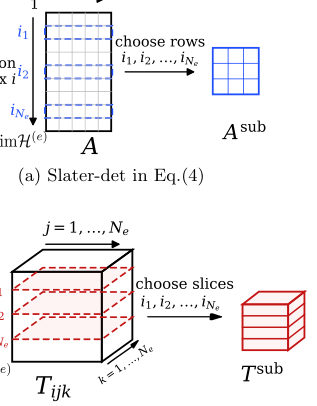
<figcaption class="paper-figure-caption"><b>Fig 1.</b> FIG. 1: Illustration of selecting submatrix/subtensor to define many-body wavefunctions.</figcaption>
</figure>
<figure class="paper-figure-card">
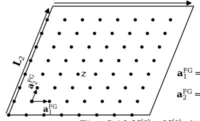
<figcaption class="paper-figure-caption"><b>Fig 2.</b> FIG. 3: The Fine-Grid on a finite torus with N(e) s = 8.</figcaption>
</figure>
<figure class="paper-figure-card">
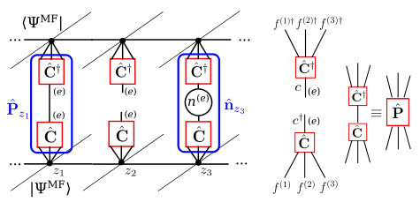
<figcaption class="paper-figure-caption"><b>Fig 3.</b> FIG. 4: Illustration of the Grassmann tensor-network picture with fusion gate ˆCz and the gate ˆPz.</figcaption>
</figure>
<figure class="paper-figure-card">
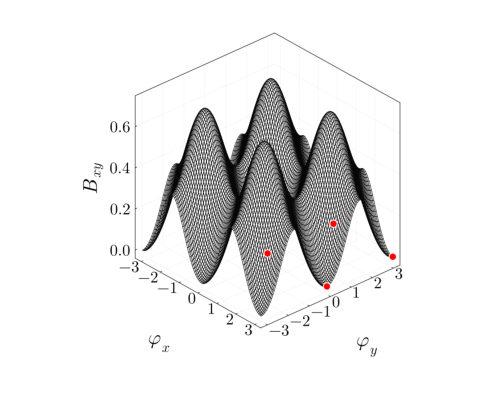
<figcaption class="paper-figure-caption"><b>Fig 4.</b> FIG. 5: The exact Berry’s curvature of flat-gauge-connections Bxy(φx,φy) for ν = 1</figcaption>
</figure>
<figure class="paper-figure-card">
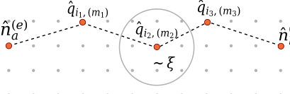
<figcaption class="paper-figure-caption"><b>Fig 5.</b> FIG. 6: Schematic illustration of PE corrections to long-range observables.</figcaption>
</figure>
</div>

<p><strong>Summary.</strong> This paper introduces Hyperdeterminant wavefunctions as a powerful, generalized variational method for studying strongly correlated quantum matter. It allows researchers to access fractionalized degrees of freedom crucial for understanding topological phases like FCI and QSLs. The framework provides both theoretical tools (VMPI) and numerical algorithms (PE) to derive effective field theories for these complex systems.</p>
<p><strong>Why it may be interesting.</strong> While focused on solid-state correlations, the development of a general variational framework applicable to fractionalized excitations is mathematically rich and could inspire new ways to model complex quantum dynamics in AMO systems.</p>
<details>
<summary>Detailed structure</summary>
<p><strong>Main problem.</strong> Developing a theoretical framework to microscopically investigate strongly correlated quantum states of matter, particularly those exhibiting fractionalized degrees of freedom.</p>
<p><strong>Main result.</strong> The authors introduce Hyperdeterminant (Hdet) wavefunctions as a general variational approach that provides access to fractionalized degrees of freedom and yields reliable microscopic effective field theories for systems like FCI and QSLs.</p>
<p><strong>Method.</strong> The framework utilizes Hdet wavefunctions, which are generalized from Slater determinants, combined with Variational Manifold Path Integral (VMPI) techniques and Projective Expansion (PE) algorithms for numerical simulation.</p>
<p><strong>Model / system.</strong> The theory is applied to strongly correlated quantum states of matter, specifically modeling Fractional Chern Insulators (FCI) and Quantum Spin Liquids (QSL). The formalism generalizes fermionic parton constructions beyond standard electron degrees of freedom.</p>
<p><strong>Key observables.</strong> Microscopic effective field theories, Ward identities for gauge fluctuations, and the structure of the fusion tensor defining the Hdet state.</p>
<p><strong>Important parameters / regimes.</strong> The rank ($r$) of the underlying tensors, which dictates bosonic or fermionic statistics; lattice parameters governing correlation strength.</p>
<p><strong>Assumptions / limitations.</strong> Simulating generic Hdet wavefunctions is NP-hard, necessitating approximations like PE. The framework assumes a locality structure for physical reasonableness.</p>
<p><strong>Figures summary.</strong> Figures illustrate the mathematical construction of Hdet states by comparing submatrix selection in Slater determinants versus tensor contraction using the fusion tensor.</p>
<p><strong>Paper structure.</strong> The paper systematically introduces Hdet wavefunctions, establishes their locality structure, demonstrates applications to QSL and FCI models, derives effective theories via VMPI, and concludes with numerical simulation techniques (PE).</p>
</details>
<details>
<summary>Abstract</summary>
<p>We systematically introduce hyperdeterminant wavefunctions as a variational-wavefunction-based theoretical framework for strongly correlated quantum states of matter, together with practical numerical simulation algorithms. This framework generalizes previously known fermionic parton constructions, yields reliable microscopics with intuitive physical pictures, and allows direct access to the fractionalized degrees of freedom together with associated microscopic effective field theories. We demonstrate the applications of this framework to fractional Chern insulators and quantum spin liquids. We comment that the hyperdeterminant states belong to a more general class of variational wavefunctions: the fused Gaussian states.</p>
</details>
<p><sub><a href="#top">↑ back to top</a></sub></p>

<p><a id="paper-2607.24574"></a></p>
<h3 id="reframing-the-coupling-force-of-adaptive-resolution-simulation-in-terms-of-the-liouville-type-hierarchy-for-open-systems"><a href="http://arxiv.org/abs/2607.24574v1">Reframing the coupling force of adaptive resolution simulation in terms of the Liouville-type hierarchy for open systems</a></h3>
<p><strong>Authors:</strong> Julian F. Hille, Rupert Klein<br>
<strong>Type:</strong> theory · <strong>Category:</strong> statistical mechanics · <strong>PDF:</strong> <a href="https://arxiv.org/pdf/2607.24574v1">https://arxiv.org/pdf/2607.24574v1</a><br>
<strong>Analysis basis:</strong> full PDF text, analyzed in chunks
<strong>Topic relevance:</strong> <code>Keldysh / 2PI / non-Gaussian methods</code> <strong>3/5</strong> · <code>methods for driven-dissipative</code> <strong>3/5</strong> · <code>non-equilibrium dynamics</code> <strong>2/5</strong> · <code>correlated / nonlocal dissipation</code> <strong>1/5</strong> · <code>driven-dissipative phase transition</code> <strong>1/5</strong> · <code>non-equilibrium universality</code> <strong>1/5</strong></p>
<div class="figure-strip-hint">↔ Scroll figures horizontally</div>
<div class="paper-figures-scroll">
<figure class="paper-figure-card">
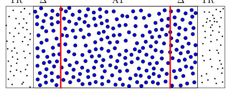
<figcaption class="paper-figure-caption"><b>Fig 1.</b> Figure 1. Different setups for the simulation of an open molecular system. Full-AT: Reference setup of the open system represented by a small subsystem in a larger fully-atomistic simulation. AdResS: Adaptive resolution simulation setup of the open system by enclosing a small subsystem in between two AT/∆boundaries; Within AT∪∆, the particles interact with each other via the same pair-wise potential as in the full-AT reference; In the TR region, the particles have no interactions, giving rise to artifacts of the ∆/TR interfaces that need to be compensated; The x-axis is normal to the AT/∆boundaries and ∆/TR interfaces. The boundaries of the open system are marked in red in both graphics.</figcaption>
</figure>
<figure class="paper-figure-card">
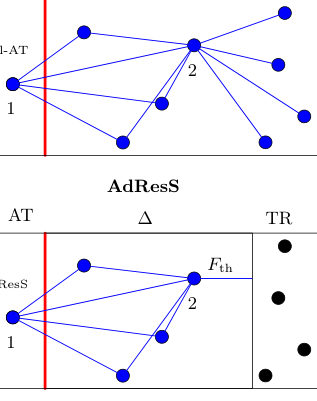
<figcaption class="paper-figure-caption"><b>Fig 2.</b> Figure 2. Situation at the open system’s boundary with particle 1 residing within the open system and particle 2 residing in the reservoir. Full-AT: Particle 1 experiences an average force ⃗Fav, Full-AT through the boundary at xAT/∆due to the particles in the reservoir, which are correctly distributed due to themselves having a correct environment (see particle 2). AdResS: Particle 1 experiences an average force ⃗Fav, AdResS through the AT/∆boundary. However, the particles in ∆, e.g. particle 2, lack the forces through the ∆/TR interface at x∆/TR. These, among other effects, must be reintroduced in an average fashion by the thermodynamic force Fth.</figcaption>
</figure>
<figure class="paper-figure-card">
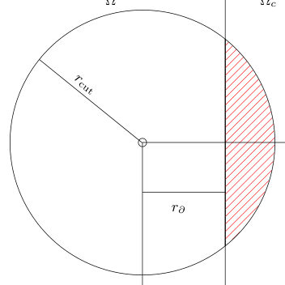
<figcaption class="paper-figure-caption"><b>Fig 3.</b> Figure 3. Illustration of the integral appearing in Eq. (25), projected into the xy plane. The simplified integration domain is shaded red and was obtained by transforming into spherical polar coordinates with polar axis rx, a potential with cut-off radius rcut and the dependence on the distance r∂of the particle i at position xi to the boundary at position x∂. The domain of the open system where the particle resides is Ωand the reservoir region is Ωc.</figcaption>
</figure>
<figure class="paper-figure-card">
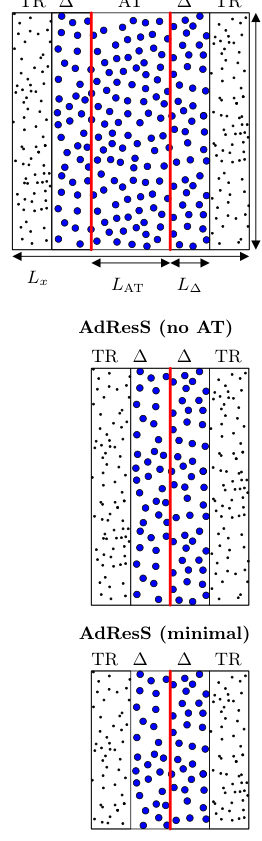
<figcaption class="paper-figure-caption"><b>Fig 4.</b> Figure 4. Proposed box setups for the calculation and validation of the thermodynamic force. AdResS (complete): AdResS setup as it has been used so far with an extended AT region, two adjacent ∆regions and a TR region beyond two ∆/TR interfaces. AdResS (no AT): Like complete but with LAT = 0, effectively collapsing the two AT/∆boundaries onto a single one. AdResS (minimal): Like no AT, but with smaller box dimensions Ly and Lz.</figcaption>
</figure>
<figure class="paper-figure-card">
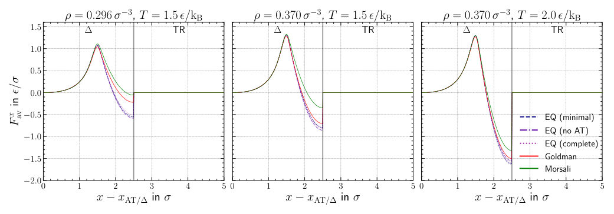
<figcaption class="paper-figure-caption"><b>Fig 5.</b> Figure 5. Initial guesses for the thermodynamic force iterations. Each column represents one thermodynamic state. The forces were obtained as the average interface forces F x av with the “boundary” placed at the position x∆/TR of the ∆/TR interface marked with a vertical gray line. We used the radial distribution functions obtained in equilibration (EQ) runs in the minimal (dashed dark blue), no AT (dashed and dotted purple) or complete (dotted pink) box setups or taken from Morsali et al. (green) or Goldman (red)[42, 43]. The x-axis was shifted by the position xAT/∆of the right-hand AT/∆boundary. Shown here are thus only the right-hand ∆and TR regions, which are representative of the...</figcaption>
</figure>
</div>

<p><strong>Summary.</strong> The paper offers a novel theoretical framework by relating the artificial 'thermodynamic force' needed in Adaptive Resolution Simulations (AdResS) to the Liouville-type hierarchy governing open quantum systems. By establishing this correspondence, it derives an integral expression for the force, providing new tools to analyze and validate simulations of complex fluids at interfaces.</p>
<p><strong>Why it may be interesting.</strong> This work provides a deep theoretical grounding for computational techniques used in simulating complex open systems, connecting mesoscopic numerical artifacts (interface forces) to fundamental statistical mechanics principles (Liouville dynamics).</p>
<details>
<summary>Detailed structure</summary>
<p><strong>Main problem.</strong> The work reinterprets the artificial 'thermodynamic force' required in Adaptive Resolution Simulations (AdResS) for open systems by mapping it onto the theoretical framework of the Liouville-type hierarchy.</p>
<p><strong>Main result.</strong> A substantial part of this coupling force can be rigorously framed using the Liouville-type hierarchy, leading to a derived integral expression that allows for parameter dependency analysis and new validation criteria.</p>
<p><strong>Method.</strong> The authors derive an explicit correspondence between the numerical force correction in AdResS and the source terms ($\Psi_n$, $\Phi_{n+1}^n$) governing particle flux across boundaries in the Liouville-type equation for open systems.</p>
<p><strong>Model / system.</strong> The system is modeled as an open many-particle fluid (e.g., Lennard-Jones fluid) simulated using AdResS, which partitions space into interacting, transition, and tracer regions to handle interfaces.</p>
<p><strong>Key observables.</strong> Particle number fluctuations, radial distribution functions, the thermodynamic force ($F_{	ext{th}}$), and the average force ($\vec{F}_{	ext{av}}$) exerted by the environment across boundaries.</p>
<p><strong>Important parameters / regimes.</strong> Simulation parameters include density ($
ho$), temperature ($T$), time step size, and the convergence tolerance for the force calculation.</p>
<p><strong>Assumptions / limitations.</strong> The derivation assumes that the system can be accurately described by mapping to the Liouville hierarchy, and simplifications are made assuming planar geometry and global thermal equilibrium for the environment.</p>
<p><strong>Figures summary.</strong> Figures illustrate the setup comparison between full-atomistic reference simulations and AdResS setups across different thermodynamic states; other figures detail particle crossing statistics and force convergence.</p>
<p><strong>Paper structure.</strong> The paper first introduces the AdResS method and the need for a compensating 'thermodynamic force.' It then develops the theoretical mapping to the Liouville-type hierarchy, deriving integral expressions for the average boundary force. Finally, it validates these theoretical claims through detailed simulation studies of an atomistic fluid.</p>
</details>
<details>
<summary>Abstract</summary>
<p>In this work, we present a novel perspective on the coupling force employed to compensate the interface artifacts prevalent in adaptive resolution simulations (AdResS) of open many-particle systems. We show that a substantial part of this "thermodynamic force" can be framed in terms of the theoretical model of the Liouville-type hierarchy for open systems. The correspondence is made explicit for the case of a simple atomistic fluid, for which a one-dimensional integral expression is derived. This enables the analysis for dependencies of the thermodynamic force on important simulation parameters, which is taken to inspire both simplifications for the numerical calculation of the thermodynamic force and new criteria for its validation that are adequate to the interfacial nature of the problem. The theoretical claims are then verified in a simulation study of the atomistic supercritical Lennard-Jones fluid at different thermodynamic states.</p>
</details>
<p><sub><a href="#top">↑ back to top</a></sub></p>

<p><a id="paper-2607.23551"></a></p>
<h3 id="a-tqft-based-platform-for-efficient-computation-of-knot-invariants"><a href="http://arxiv.org/abs/2607.23551v1">A TQFT-based Platform for Efficient Computation of Knot Invariants</a></h3>
<p><strong>Authors:</strong> Amena Al Rawi, Hisham Sati, Vivek Kumar Singh<br>
<strong>Type:</strong> theory · <strong>Category:</strong> other · <strong>PDF:</strong> <a href="https://arxiv.org/pdf/2607.23551v1">https://arxiv.org/pdf/2607.23551v1</a><br>
<strong>Analysis basis:</strong> full PDF text, analyzed in chunks
<strong>Topic relevance:</strong> <code>methods for driven-dissipative</code> <strong>3/5</strong> · <code>Keldysh / 2PI / non-Gaussian methods</code> <strong>2/5</strong> · <code>analog quantum simulation</code> <strong>2/5</strong> · <code>entanglement &amp; information structure</code> <strong>2/5</strong> · <code>non-equilibrium dynamics</code> <strong>1/5</strong></p>
<div class="figure-strip-hint">↔ Scroll figures horizontally</div>
<div class="paper-figures-scroll">
<figure class="paper-figure-card">
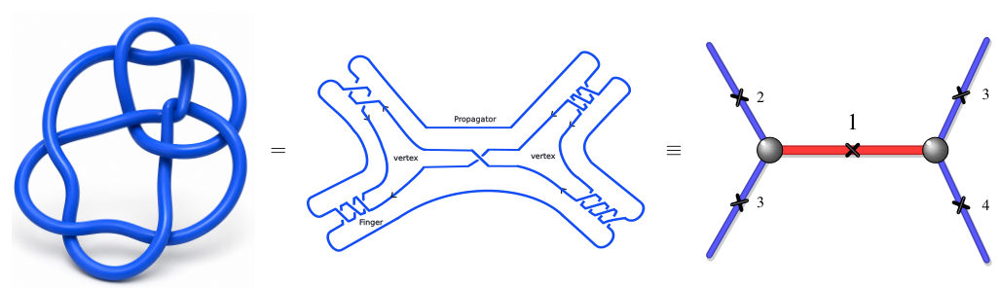
<figcaption class="paper-figure-caption"><b>Fig 1.</b> Figure 1: Three complementary views of the knot 1093: its conventional projection, its FRD description, and the corresponding TQFT tangle representation.</figcaption>
</figure>
<figure class="paper-figure-card">
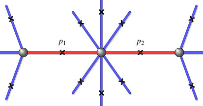
<figcaption class="paper-figure-caption"><b>Fig 2.</b> Figure 2: The basic structure of a FRD. Blue lines are fingers, red lines are propagators, and gray dots are vertices. Small black marks on the fingers indicate positions carrying integer-valued braiding parameters.</figcaption>
</figure>
<figure class="paper-figure-card">
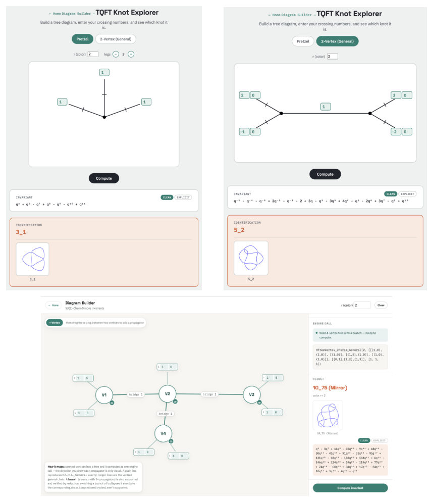
<figcaption class="paper-figure-caption"><b>Fig 3.</b> Figure 4: The web interface showing (left) the Pretzel explorer, (right) the 2-vertex explorer, and (bottom) the Diagram Builder.</figcaption>
</figure>
<figure class="paper-figure-card">
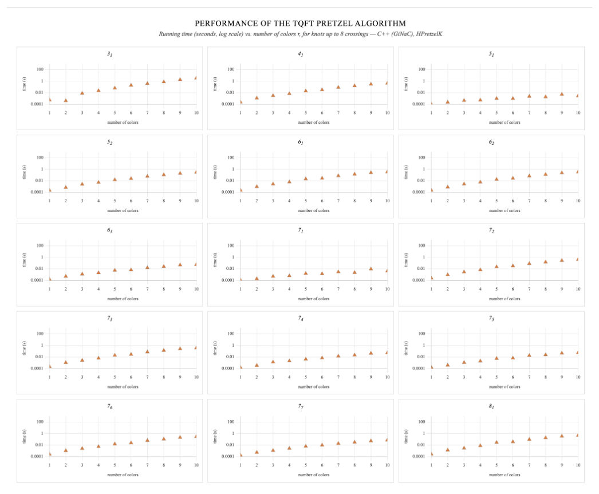
<figcaption class="paper-figure-caption"><b>Fig 4.</b> Figure 5: Running time of the single-vertex pretzel algorithm (HPretzelK) implemented in C++ (GiNaC) for the first 15 arborescent knots up to 8 crossings, at representation parameter r = 1,...,10.</figcaption>
</figure>
<figure class="paper-figure-card">
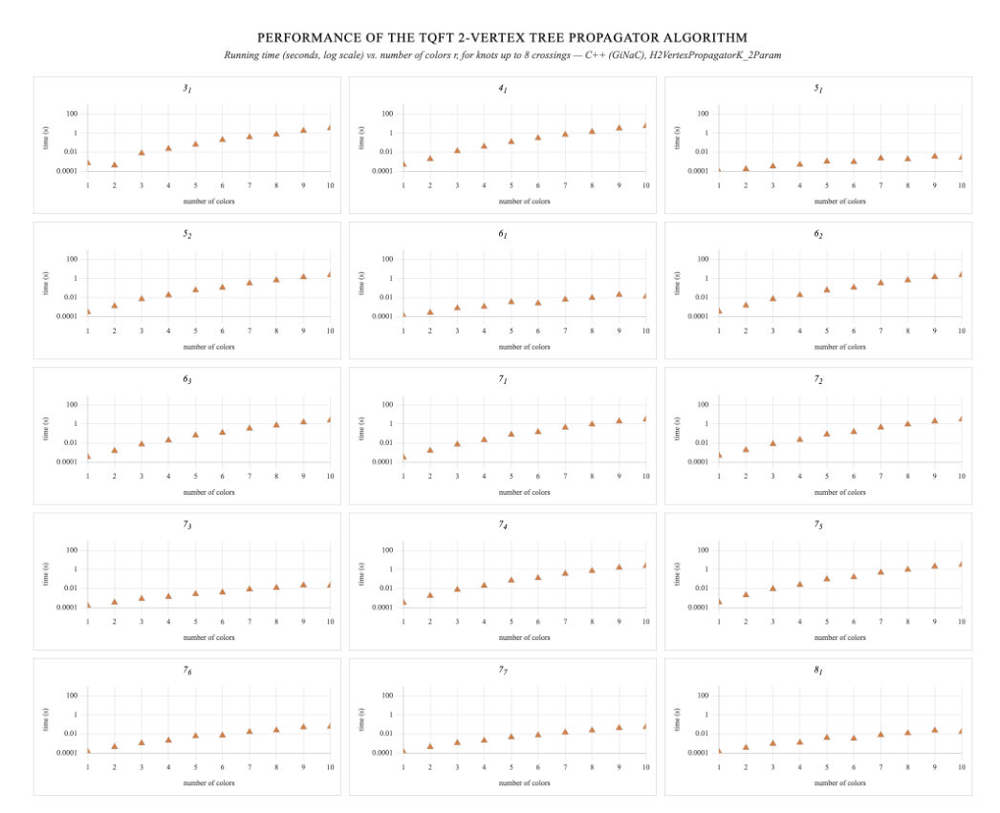
<figcaption class="paper-figure-caption"><b>Fig 5.</b> Figure 6: Running time of the 2-vertex 2-parameter tree propagator algorithm (H2VertexPropagatorK 2Param) implemented in C++ (GiNaC) for the first 15 arborescent knots up to 8 crossings, at representation parameter r = 1,...,10.</figcaption>
</figure>
</div>

<p><strong>Summary.</strong> This paper introduces an interactive web platform that unifies knot diagram construction, tensor network evaluation via TQFT, and the computation of colored Chern-Simons invariants. It demonstrates that this framework can systematically classify arborescent knots by mapping their topology onto computable quantum invariants. This represents a significant computational advance in topological quantum field theory.</p>
<p><strong>Why it may be interesting.</strong> While not directly about AMO systems, the use of tensor networks (a computational tool) derived from topological field theory provides a powerful analogy for calculating entanglement or correlation functions in quantum many-body systems where local structure dictates global properties.</p>
<details>
<summary>Detailed structure</summary>
<p><strong>Main problem.</strong> The core problem is classifying knots in 3D space, which becomes computationally intractable as the crossing number increases.</p>
<p><strong>Main result.</strong> The authors developed a unified web platform that uses Feynman ribbon diagrams (FRDs) and TQFT principles to compute strong knot invariants for arborescent knots up to at least 10 crossings.</p>
<p><strong>Method.</strong> They map the combinatorial structure of an FRD onto a tensor network calculation, evaluating it using techniques derived from Chern-Simons theory to yield colored quantum invariants.</p>
<p><strong>Model / system.</strong> The model is Knot Theory, specifically focusing on arborescent knots represented by Feynman ribbon diagrams (FRDs). The underlying physics framework is Topological Quantum Field Theory (TQFT) applied via Chern-Simons theory.</p>
<p><strong>Key observables.</strong> Colored quantum invariants (Laurent polynomials in q), which must remain invariant under Reidemeister moves, and the knot determinant.</p>
<p><strong>Important parameters / regimes.</strong> The crossing number of the knot ($c(K)$); the structure parameters defining the two-vertex FRD ($\Gamma(A_1; p_{12}; A_2)$).</p>
<p><strong>Assumptions / limitations.</strong> The platform is currently restricted to tree-shaped (arborescent) FRDs, and while the computation engine is general, knot identification relies on matching computed invariants against a finite database.</p>
<p><strong>Figures summary.</strong> Figures illustrate the relationship between a knot's conventional projection, its representation as an FRD, and its corresponding TQFT tangle structure. Figure 3 details the two-vertex diagram structure.</p>
<p><strong>Paper structure.</strong> The paper introduces the problem of knot classification, proposes the TQFT/FRD framework, details the construction of the interactive web platform ('TQFT Knot Explorer'), presents the mathematical machinery for tensor network evaluation, and concludes with results on the completeness of the two-vertex diagram family up to 10 crossings.</p>
</details>
<details>
<summary>Abstract</summary>
<p>We present an interactive web platform that unifies the construction Feynman ribbon diagrams (FRDs), the evaluation of higher-rank Chern--Simons knot invariants, and the identification of FRD-like knots at higher crossing numbers. These tree-structured diagrams naturally represent arborescent knots, which we refer to throughout as FRD-like knots. Within a single visual environment, users can construct an FRD as a tensor network, evaluate its associated Chern--Simons invariants, and use the resulting invariant data to distinguish and identify the corresponding knot. To our knowledge, this is the first platform to combine diagrammatic construction, tensor-network evaluation, invariant computation, and knot identification within a unified workflow.</p>
</details>
<p><sub><a href="#top">↑ back to top</a></sub></p>

<p><a id="paper-2607.23463"></a></p>
<h3 id="purcell-engineered-hybrid-coupler-for-leakage-suppressed-robust-cz-gates"><a href="http://arxiv.org/abs/2607.23463v1">Purcell-Engineered Hybrid Coupler for Leakage-Suppressed Robust CZ Gates</a></h3>
<p><strong>Authors:</strong> Hui Wang, Feng Bao, Yan-Jun Zhao, Xun-Wei Xu<br>
<strong>Type:</strong> theory · <strong>Category:</strong> quantum information and computing · <strong>PDF:</strong> <a href="https://arxiv.org/pdf/2607.23463v1">https://arxiv.org/pdf/2607.23463v1</a><br>
<strong>Analysis basis:</strong> full PDF text, analyzed in chunks
<strong>Topic relevance:</strong> <code>correlated / nonlocal dissipation</code> <strong>3/5</strong> · <code>methods for driven-dissipative</code> <strong>3/5</strong> · <code>QC/QI experiment</code> <strong>1/5</strong> · <code>correlated cavity matter</code> <strong>1/5</strong> · <code>driven-dissipative phase transition</code> <strong>1/5</strong> · <code>non-equilibrium dynamics</code> <strong>1/5</strong></p>
<div class="figure-strip-hint">↔ Scroll figures horizontally</div>
<div class="paper-figures-scroll">
<figure class="paper-figure-card">
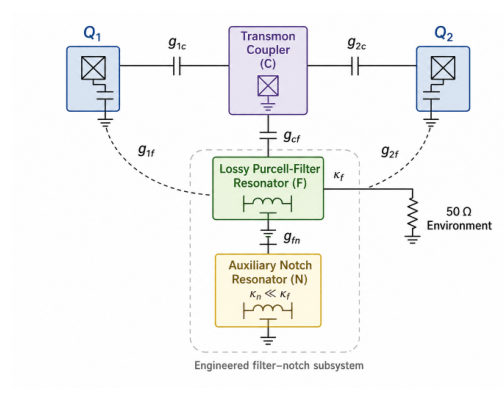
<figcaption class="paper-figure-caption"><b>Fig 1.</b> FIG. 1. Schematic of the Purcell-engineered filter–notch hy- brid coupler. The engineered environment comprises two cou- pled resonant elements: a lossy Purcell-filter resonator F and a weakly dissipative auxiliary notch resonator N. The filter mode couples to the dominant 50 Ωdissipative environment with rate κf, whereas the notch mode couples coherently to the filter through gfn and has only weak intrinsic loss κn. To- gether, the two resonators form a single integrated filter–notch subsystem. Their interference suppresses the environmental response near the computational transitions while retaining a stronger response near selected leakage-related transitions.</figcaption>
</figure>
<figure class="paper-figure-card">
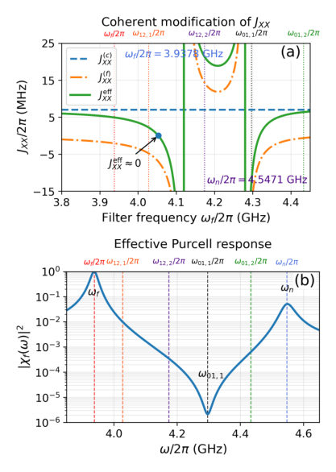
<figcaption class="paper-figure-caption"><b>Fig 2.</b> FIG. 2. (a) Representative dependence of the effective trans- verse interaction Jeff XX on the filter frequency ωf. The ef- fective interaction consists of the direct qubit–qubit coupling g12, the virtual exchange mediated by the nonlinear transmon coupler, J(c) XX [Eq. (6)], and the filter-mediated contribution J(f) XX [Eq. (7)], giving Jeff XX ≃g12 + J(c) XX + J(f) XX. The near- zero crossing is included only to illustrate the available tuning range and does not represent the final CZ operating point. (b) Qualitative frequency response R(ω) = |χf(ω)|2 of the cou- pled filter–notch subsystem [Eq. (8)]. The plotted response illustrates the qualitative spectral engineering principle and does...</figcaption>
</figure>
<figure class="paper-figure-card">
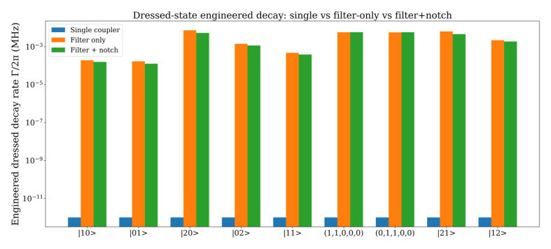
<figcaption class="paper-figure-caption"><b>Fig 3.</b> FIG. 3. Engineered decay rates for representative computational and leakage-related eigenstates. Results are shown for the single-coupler, filter-only (gfn = 0), and full filter–notch architectures. Leakage-dominated dressed eigenstates, identified by their largest overlap with the corresponding bare leakage states |20⟩, |02⟩, |21⟩, and |12⟩, exhibit decay rates more than an order of magnitude larger than those of the computational manifold (|10⟩, |01⟩, and |11⟩), demonstrating strong leakage- selective dissipation. The inclusion of the notch resonator slightly suppresses both computational and leakage decay rates while preserving this strong separation. Tuple labels follow the notation...</figcaption>
</figure>
<figure class="paper-figure-card">
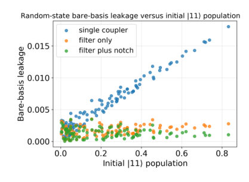
<figcaption class="paper-figure-caption"><b>Fig 4.</b> FIG. 4. Random-state bare-projector leakage as a func- tion of the initial |11⟩population. Each point corresponds to a different randomly generated computational state |ψ0⟩= c00|00⟩+ c01|01⟩+ c10|10⟩+ c11|11⟩, with all four complex amplitudes sampled simultaneously and normalized. Thus, the figure represents a statistical correlation between leak- age and the initial |11⟩population rather than a scan per- formed at fixed P11. The single-coupler architecture shows a strong increase of leakage with increasing |11⟩weight, indi- cating that the dominant leakage pathway is associated with the two-excitation manifold. The filter-only and filter+notch architectures keep the leakage much lower and...</figcaption>
</figure>
<figure class="paper-figure-card">
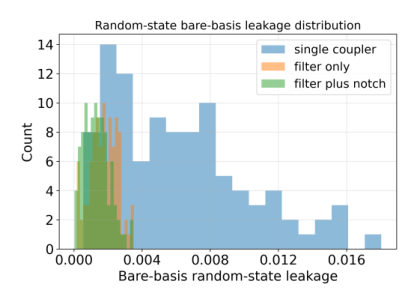
<figcaption class="paper-figure-caption"><b>Fig 5.</b> FIG. 5. Distribution of random-state bare-projector leakage for the optimized single-coupler, filter-only, and filter+notch architectures. The hybrid architectures shift the leakage distribution toward lower values compared with the single- coupler reference, with the filter+notch design giving the smallest mean leakage.</figcaption>
</figure>
</div>

<p><strong>Summary.</strong> The paper introduces a novel Purcell-engineered hybrid coupler designed to enhance the robustness of CZ gates in superconducting quantum processors. By integrating both coherent interaction engineering (via the transmon coupler) and leakage-selective dissipation (using filter/notch resonators), the authors achieve state-of-the-art gate fidelities while drastically suppressing unwanted energy loss pathways.</p>
<p><strong>Why it may be interesting.</strong> This work directly addresses open quantum system dynamics in superconducting circuits by showing how engineered dissipation (the notch/filter) can complement coherent control to achieve higher fidelity gates, which is a key area for AMO physicists studying cavity QED and open systems.</p>
<details>
<summary>Detailed structure</summary>
<p><strong>Main problem.</strong> The primary challenge is developing robust superconducting controlled-Z (CZ) gates by effectively suppressing leakage into non-computational states.</p>
<p><strong>Main result.</strong> The proposed Purcell-engineered hybrid coupler significantly reduces leakage probability (down to $1.6	imes10^{-3}$) and improves worst-case gate fidelity ($F_{	ext{min}}=99.62\%$) compared to optimized single-coupler designs.</p>
<p><strong>Method.</strong> The study employs dressed-eigenstate analysis combined with Lindblad master-equation simulations to model the open quantum system dynamics.</p>
<p><strong>Model / system.</strong> The platform is superconducting qubits (transmons) coupled via a nonlinear transmon coupler, augmented by an engineered subsystem consisting of a Purcell filter and an auxiliary notch resonator. The Hamiltonian describes coherent interactions ($H_{	ext{int}}$), while dissipation is modeled via Lindblad operators.</p>
<p><strong>Key observables.</strong> Gate fidelity metrics ($F_{	ext{avg}}, F_{	ext{min}}$) and the leakage probability are the key diagnostics used to quantify gate performance.</p>
<p><strong>Important parameters / regimes.</strong> The architecture's robustness is tested over a broad range of coherence assumptions and device parameters, with optimized values listed in tables.</p>
<p><strong>Assumptions / limitations.</strong> Analysis assumes fixed operating frequencies for qubits and coupler during the gate operation. The notch mode coupling is treated under an approximation hierarchy ($g_{fn} \gg g_{1n}, g_{2n}$).</p>
<p><strong>Figures summary.</strong> Figures illustrate the schematic of the hybrid coupler, how effective transverse interaction depends on filter frequency, and spectral responses showing engineered dissipation minima near computational transitions.</p>
<p><strong>Paper structure.</strong> The paper builds from identifying the leakage problem to proposing the hybrid architecture. It analyzes coherent interactions using dressed-eigenstates, models dissipation engineering via the coupled filter-notch subsystem, and finally validates performance using master equation simulations across varying parameters.</p>
</details>
<details>
<summary>Abstract</summary>
<p>We propose a Purcell-engineered notch-filter hybrid coupler for superconducting controlled-$Z$ (CZ) gates that combines coherent interaction engineering with leakage-selective dissipation. The architecture integrates a nonlinear transmon coupler with a coupled Purcell-filter and notch-resonator subsystem, providing additional control over both the coherent interaction pathways and the engineered dissipative environment. The filter branch reshapes the effective interaction pathways, while the notch resonator further tailors the frequency response of the coupled filter network and preserves strong leakage-selective dissipation.   Using dressed-eigenstate analysis together with Lindblad master-equation simulations, we show that the proposed architecture substantially reduces leakage and improves the worst-case computational-state fidelity compared with an optimized single-transmon coupler while remaining robust over a broad range of coherence assumptions and device parameters. The optimized gate achieves $F_{\rm avg}=99.74\%$, $F_{\rm min}=99.62\%$, and a maximum leakage probability of $1.6\times10^{-3}$. These results demonstrate that engineered dissipation complements conventional coherent interaction engineering and provides an additional design degree of freedom for realizing robust, high-fidelity superconducting CZ gates.</p>
</details>
<p><sub><a href="#top">↑ back to top</a></sub></p>

<p><a id="paper-2607.24102"></a></p>
<h3 id="response-selected-hidden-hyperuniformity-in-hydrodynamic-active-matter"><a href="http://arxiv.org/abs/2607.24102v1">Response-Selected Hidden Hyperuniformity in Hydrodynamic Active Matter</a></h3>
<p><strong>Authors:</strong> Liyu Zhong, Yang Jiao<br>
<strong>Type:</strong> theory · <strong>Category:</strong> statistical mechanics · <strong>PDF:</strong> <a href="https://arxiv.org/pdf/2607.24102v1">https://arxiv.org/pdf/2607.24102v1</a><br>
<strong>Analysis basis:</strong> full PDF text, analyzed in chunks
<strong>Topic relevance:</strong> <code>non-equilibrium universality</code> <strong>3/5</strong> · <code>non-equilibrium dynamics</code> <strong>2/5</strong> · <code>Keldysh / 2PI / non-Gaussian methods</code> <strong>1/5</strong> · <code>analog quantum simulation</code> <strong>1/5</strong> · <code>correlated / nonlocal dissipation</code> <strong>1/5</strong> · <code>driven-dissipative phase transition</code> <strong>1/5</strong> · <code>methods for driven-dissipative</code> <strong>1/5</strong></p>
<div class="figure-strip-hint">↔ Scroll figures horizontally</div>
<div class="paper-figures-scroll">
<figure class="paper-figure-card">
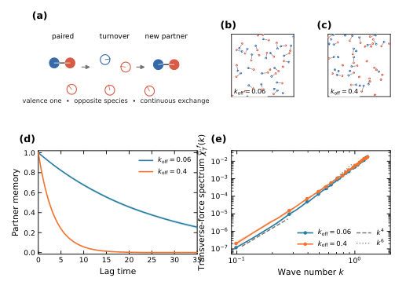
<figcaption class="paper-figure-caption"><b>Fig 1.</b> FIG. 1. Exchangeable active multipoles. (a) Reversible valence-one association with no prescribed partner. (b,c) Steady-state crops at N = 1024 for weak and strong turnover; filled particles are associated, open particles are unpaired, and gray segments are bonds. (d) Partner memory averaged over four independent seeds. (e) Transverse-force spectra; shaded regions are 95% confidence intervals and the gray segments indicate k4 and k6 slopes.</figcaption>
</figure>
<figure class="paper-figure-card">
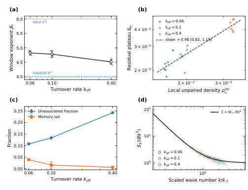
<figcaption class="paper-figure-caption"><b>Fig 2.</b> FIG. 2. Turnover controls a universal infrared crossover. (a) Seed-resolved force-spectrum window expo- nent; black markers and bars are means and 95% confidence intervals. (b) Spectral plateau versus the independently mea- sured local unpaired density. The dashed line is a joint log–log fit, with its bootstrap 95% interval shown in the legend. (c) Unassociated fraction and long-lag memory tail. (d) Collapse of all N = 256 spectra onto S1/(Bk2) = 1 + (k×/k)2.</figcaption>
</figure>
<figure class="paper-figure-card">
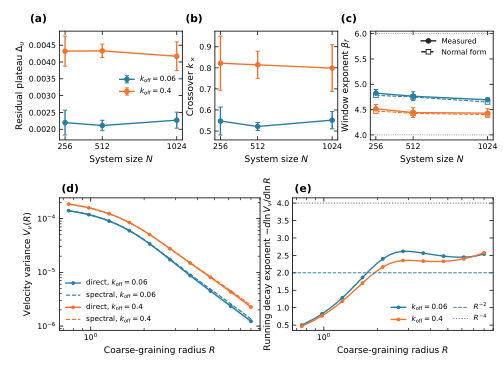
<figcaption class="paper-figure-caption"><b>Fig 3.</b> FIG. 3. Finite-size persistence and macroscopic re- sponse. (a,b) Residual plateau and crossover wave number for N = 256, 512, and 1024. (c) Measured window exponent and the value predicted by the two-term normal form. Error bars are 95% confidence intervals. (d) Direct coarse-grained velocity variance and its spectral prediction at N = 1024; shaded regions are 95% intervals. (e) Corresponding running decay exponent.</figcaption>
</figure>
</div>

<p><strong>Summary.</strong> This work introduces 'response-selected hyperuniformity' for active fluids, arguing that the observable long-range order depends on which components of the driving force the fluid physically responds to. The authors derive a universal crossover scaling law for the transverse-force spectrum, showing that perfect hyperuniformity is only achieved in the idealized zero-residual limit.</p>
<p><strong>Why it may be interesting.</strong> While focused on classical active matter hydrodynamics, the concept of 'response selection' and deriving universal scaling laws from microscopic constraints (like incompressibility) shares conceptual parallels with how quantum response functions are analyzed in many-body physics.</p>
<details>
<summary>Detailed structure</summary>
<p><strong>Main problem.</strong> To characterize a novel form of emergent hyperuniformity in hydrodynamic active matter, moving beyond treating it as a property of prescribed density fields.</p>
<p><strong>Main result.</strong> The transverse-force spectrum exhibits a universal crossover from fourth- to sixth-order scaling, demonstrating that strict hyperuniformity requires zero residual activity moments.</p>
<p><strong>Method.</strong> Mathematical derivation using Fourier space analysis and source-response formalism applied to hydrodynamic interactions in an incompressible fluid.</p>
<p><strong>Model / system.</strong> A reversible valence-one active fluid model involving overdamped carriers with signed first moments, interacting hydrodynamically.</p>
<p><strong>Key observables.</strong> Transverse-force spectrum $    ilde{\chi}_f^T(\mathbf{k})$, source spectrum $S_1(\mathbf{k})$, and the crossover wave number $k_	imes$.</p>
<p><strong>Important parameters / regimes.</strong> The ratio of unscreened residual to screened analytic contribution, which sets the crossover scale.</p>
<p><strong>Assumptions / limitations.</strong> The analysis assumes an incompressible fluid response and models the source spectrum as a sum of an analytic (cluster) term and a constant plateau (residual moment).</p>
<p><strong>Figures summary.</strong> Figures illustrate active multipoles evolution and display the resulting transverse-force spectra, showing the characteristic crossover behavior.</p>
<p><strong>Paper structure.</strong> The paper introduces response-selected hyperuniformity by analyzing how fluid incompressibility selects specific force components. It derives the spectral form exhibiting a $k^4 	o k^6$ crossover based on residual vs. screened contributions, concluding that finite residuals cause infrared leakage.</p>
</details>
<details>
<summary>Abstract</summary>
<p>Hyperuniformity in active matter is usually treated as a property of a prescribed density or continuum field. This view misses a basic feature of hydrodynamic active matter: an incompressible fluid does not respond equally to every microscopic force. Longitudinal forcing is absorbed into pressure, whereas transverse forcing drives flow. The relevant question is therefore not only whether particles are uniformly arranged or whether the total activity is small, but which sector of the active forcing is selected by the physical response. Here we introduce response-selected hyperuniformity, in which long-wavelength order is a property of a source-response pair. In a reversible valence-one fluid with no prescribed partners, locally neutral clusters screen the signed active-moment sector that controls transverse flow, producing a first-moment spectrum that vanishes quadratically at low wavenumber. Locally unscreened moments instead generate a nonzero infrared plateau. The resulting transverse-force spectrum has a universal crossover from fourth- to sixth-order scaling, with the crossover set by the ratio of the unscreened residual to the screened analytic contribution. Complete partner renewal preserves this normal form, establishing exchangeable multipole inheritance, while turnover tunes the residual through an independently measured local defect density. The zero-residual limit yields strictly hyperuniform velocity fluctuations; any finite residual causes defect-controlled infrared leakage and sets a finite screening length. Thus microscopic exchange need not destroy hidden hyperuniform flow order, but rare unscreened moments determine how far the quiet-flow regime survives.</p>
</details>
<p><sub><a href="#top">↑ back to top</a></sub></p>

<p><a id="paper-2607.23745"></a></p>
<h3 id="the-physics-of-unresolved-uncertainty-quantum-mechanics-as-a-theory-of-potentiality"><a href="http://arxiv.org/abs/2607.23745v1">The Physics of Unresolved Uncertainty: Quantum Mechanics as a Theory of Potentiality</a></h3>
<p><strong>Authors:</strong> Lionel Martellini<br>
<strong>Type:</strong> theory · <strong>Category:</strong> other · <strong>PDF:</strong> <a href="https://arxiv.org/pdf/2607.23745v1">https://arxiv.org/pdf/2607.23745v1</a><br>
<strong>Analysis basis:</strong> full PDF text, analyzed in chunks
<strong>Topic relevance:</strong> <code>quantum measurements</code> <strong>3/5</strong> · <code>measurement-induced transitions</code> <strong>2/5</strong> · <code>correlated / nonlocal dissipation</code> <strong>1/5</strong> · <code>driven-dissipative phase transition</code> <strong>1/5</strong> · <code>entanglement &amp; information structure</code> <strong>1/5</strong> · <code>interference shaping light</code> <strong>1/5</strong> · <code>non-equilibrium dynamics</code> <strong>1/5</strong></p>
<div class="figure-strip-hint">↔ Scroll figures horizontally</div>
<div class="paper-figures-scroll">
<figure class="paper-figure-card">
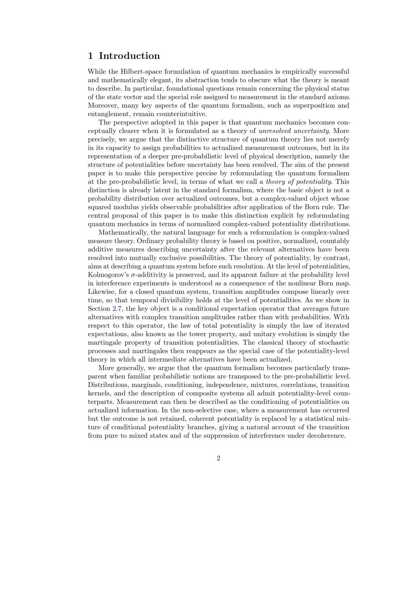
<figcaption class="paper-figure-caption"><b>Fig 1.</b> Low-resolution page preview, page 2</figcaption>
</figure>
<figure class="paper-figure-card">
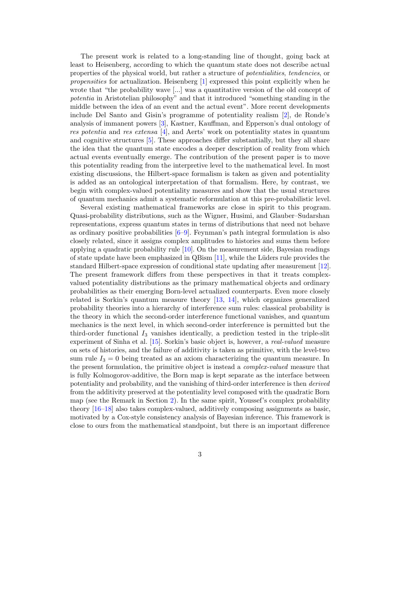
<figcaption class="paper-figure-caption"><b>Fig 2.</b> Low-resolution page preview, page 3</figcaption>
</figure>
<figure class="paper-figure-card">
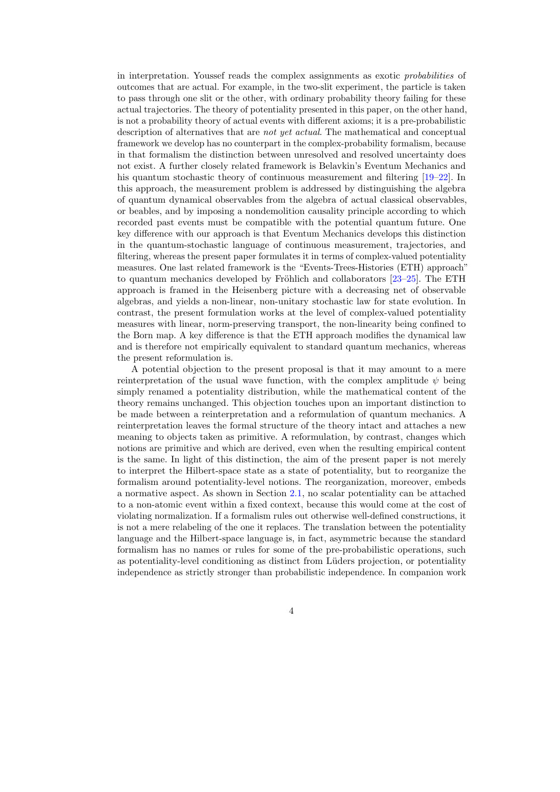
<figcaption class="paper-figure-caption"><b>Fig 3.</b> Low-resolution page preview, page 4</figcaption>
</figure>
<figure class="paper-figure-card">
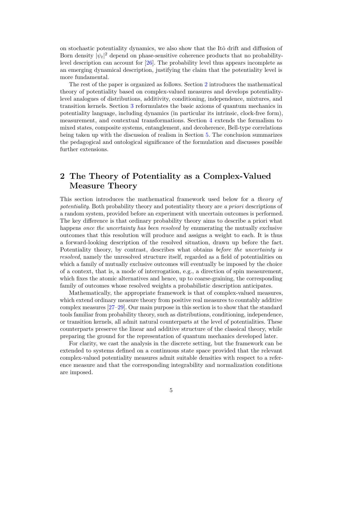
<figcaption class="paper-figure-caption"><b>Fig 4.</b> Low-resolution page preview, page 5</figcaption>
</figure>
<figure class="paper-figure-card">
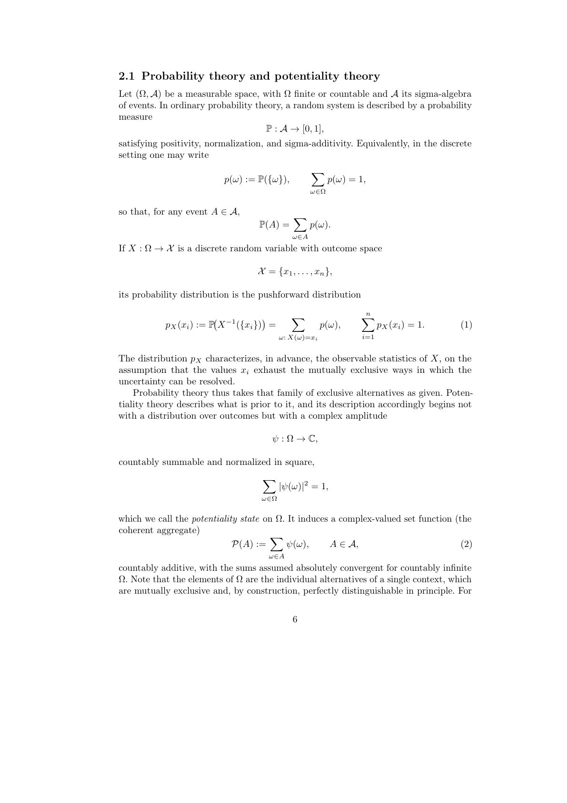
<figcaption class="paper-figure-caption"><b>Fig 5.</b> Low-resolution page preview, page 6</figcaption>
</figure>
</div>

<p><strong>Summary.</strong> The paper proposes reformulating quantum mechanics as a 'Theory of Potentiality' using complex-valued measure theory. It distinguishes between the linear mathematics governing unactualized potentialities and the nonlinear Born map that yields observable probabilities. This framework aims to provide a deeper, pre-probabilistic understanding of QM while remaining mathematically equivalent to standard formalism.</p>
<p><strong>Why it may be interesting.</strong> This work offers a deep conceptual re-foundation of quantum mechanics that addresses the measurement problem by positing an underlying mathematical structure of unresolved potentiality, which is highly relevant to foundational questions in open quantum systems theory.</p>
<details>
<summary>Detailed structure</summary>
<p><strong>Main problem.</strong> To reformulate quantum mechanics (QM) as a fundamental theory of 'unresolved uncertainty' rather than solely focusing on probabilities derived from actualized outcomes.</p>
<p><strong>Main result.</strong> The proposed potentiality framework is empirically equivalent to standard QM but makes explicit the pre-probabilistic structure underlying quantum phenomena like interference and entanglement.</p>
<p><strong>Method.</strong> It utilizes complex-valued measure theory, treating potentialities as primary objects that retain linear additivity, contrasting this with the nonlinear Born map required for observable probabilities.</p>
<p><strong>Model / system.</strong> The model describes general quantum systems using potentiality distributions ($\psi$), which are complex-valued measures over an underlying context space $\Omega$. It systematically maps standard QM concepts (e.g., partial trace, Lüders update) to analogous structures in this new formalism.</p>
<p><strong>Key observables.</strong> Observable probabilities ($p_X(x)$), coherent potentiality aggregates ($P(A)$), and the structure of joint potentialities ($\psi(x, y)$).</p>
<p><strong>Important parameters / regimes.</strong> The distinction between linear (potentiality) and quadratic (probability/Born map) structures is key; no specific physical parameters are emphasized over the mathematical formalism.</p>
<p><strong>Assumptions / limitations.</strong> The core assumption is that QM can be fundamentally understood as a theory of pre-probabilistic potentialities, which requires redefining primitive notions away from standard probability axioms.</p>
<p><strong>Figures summary.</strong> A detailed comparison table maps standard quantum mechanical concepts (e.g., density matrix, Lüders update) to their corresponding structures within the Theory of Potentiality.</p>
<p><strong>Paper structure.</strong> The paper systematically develops a 'potentiality language,' contrasting it with standard QM by defining analogues for core probabilistic operations (conditioning, independence) at the complex measure level before applying the Born map.</p>
</details>
<details>
<summary>Abstract</summary>
<p>We propose a reformulation of quantum mechanics as a theory of unresolved uncertainty. The framework is formulated in the language of complex-valued measure theory, regarded as a pre-probabilistic counterpart of ordinary probability theory. In this formulation, additivity, conditioning, independence, mixtures, transition kernels, and temporal divisibility retain natural linear forms at the potentiality level, while non-classical probability-level features such as interference arise from the nonlinear Born map. Measurement is described as Bayesian-type conditioning of potentialities on actualized information, and non-selective measurement as the replacement of coherent potentiality by statistical mixtures of conditional branches. Mixed states, decoherence, composite systems, entanglement, and Bell-type correlations are also given a unified potentiality-level interpretation. The resulting formulation is empirically equivalent to standard quantum mechanics, but it makes explicit a pre-probabilistic description of physical reality that is usually implicit in the Hilbert-space formalism.</p>
</details>
<p><sub><a href="#top">↑ back to top</a></sub></p>

<p><a id="paper-2607.24127"></a></p>
<h3 id="tree-tensor-network-reservoir-computing-hierarchical-ensemble-with-invariant-phase-boundaries"><a href="http://arxiv.org/abs/2607.24127v1">Tree Tensor Network Reservoir Computing: Hierarchical Ensemble with Invariant Phase Boundaries</a></h3>
<p><strong>Authors:</strong> Daiki Sasaki, Chih-Chieh Chen, Tomah Sogabe<br>
<strong>Type:</strong> theory · <strong>Category:</strong> numerical methods · <strong>PDF:</strong> <a href="https://arxiv.org/pdf/2607.24127v1">https://arxiv.org/pdf/2607.24127v1</a><br>
<strong>Analysis basis:</strong> full PDF text, analyzed in chunks
<strong>Topic relevance:</strong> <code>methods for driven-dissipative</code> <strong>3/5</strong> · <code>non-equilibrium dynamics</code> <strong>2/5</strong> · <code>Keldysh / 2PI / non-Gaussian methods</code> <strong>1/5</strong> · <code>analog quantum simulation</code> <strong>1/5</strong> · <code>driven-dissipative phase transition</code> <strong>1/5</strong> · <code>entanglement &amp; information structure</code> <strong>1/5</strong> · <code>non-equilibrium universality</code> <strong>1/5</strong></p>
<div class="figure-strip-hint">↔ Scroll figures horizontally</div>
<div class="paper-figures-scroll">
<figure class="paper-figure-card">
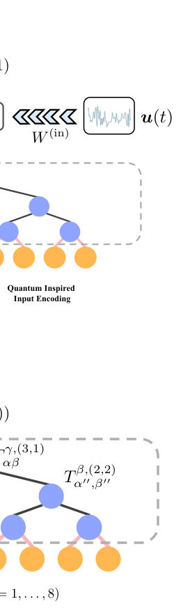
<figcaption class="paper-figure-caption"><b>Fig 1.</b> Figure 1. Conceptual diagram of TTN-RC (L = 3): (a) shows the recursive structure in which the reservoir state is obtained by applying an activation function to the sum of (i) the contraction result of the random TTN function and (ii) the weighted external input, and then feeding that state back as input. (b) shows only the random TTN function component. Here, the encoded reservoir state at the current time is propagated by successively contracting the random TTN from the bottom up.</figcaption>
</figure>
<figure class="paper-figure-card">
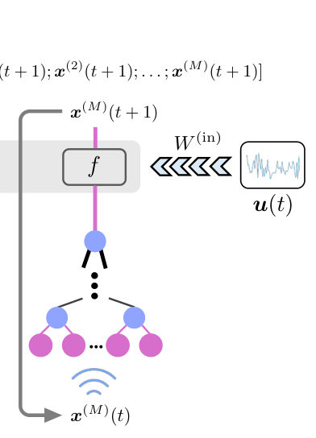
<figcaption class="paper-figure-caption"><b>Fig 2.</b> Figure 2. The recursive structure of the ensemble TTN-RC. Each tree is contracted and recursed independently, but their outputs are concatenated to form the overall reservoir state vector.</figcaption>
</figure>
<figure class="paper-figure-card">
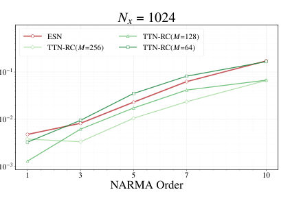
<figcaption class="paper-figure-caption"><b>Fig 3.</b> Figure 3. Comparison of the performance between TTN-RC and ESN on the NARMA1, 3, 5, 7, and 10 tasks. The horizontal axis represents the order of the NARMA task, n = 1, 3, 5, 7, 10, and the vertical axis represents the NMSE. In the left panel, the total reservoir size is fixed at Nx = 128, while in the right panel, it is fixed at Nx = 1024. For TTN-RC, the results are shown for values of M corresponding to ˜Nx = 4, 8, and 16. The presented result is the NMSE on the test data, averaged over 10 different reservoir realizations, using optimized parameters. Outliers, defined as data points falling outside 1.5 times the interquartile range, were removed, after which the average NMSE was...</figcaption>
</figure>
<figure class="paper-figure-card">
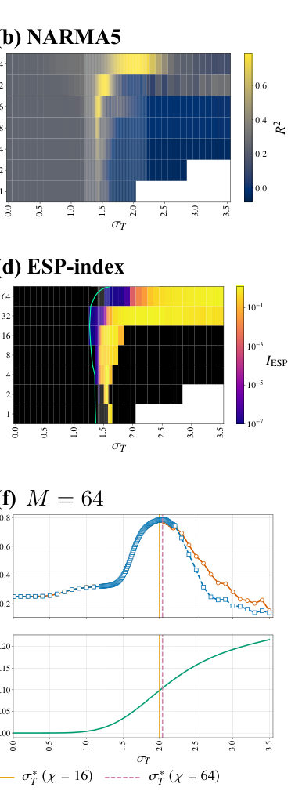
<figcaption class="paper-figure-caption"><b>Fig 4.</b> Figure 4. Performance evaluation of the TTN-RC. (a): Heatmap of the total memory capacity, Ctot STM, for the STM task. (b, c): Heatmaps of the R2 score for the NARMA5 and NARMA10 tasks, respectively. (d): Heatmap of the ESP metric, IESP(100). The light-green line indicates the contour for C = 1. In panel (d), values of 10−7</figcaption>
</figure>
<figure class="paper-figure-card">
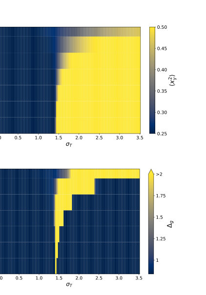
<figcaption class="paper-figure-caption"><b>Fig 5.</b> Figure 5. Heatmaps of theoretical metrics. The horizontal axis represents σT , and the vertical axis represents the number of trees M. Nx = 256 for all calculations. (a): Heatmap of C, obtained by calculating the reservoir’s Jacobian. Values of C ≥10 are saturated to the same color. The light-green line indicates the contour for C = 1. (b): Heatmap of the reservoir-state mean square qx = ⟨x2 γ⟩, given by equation (22), calculated using mean-field theory. (c): Mean-field contraction constant ρ. (d): Phenomenological learning-theory proxy based on a mean-field generalization-gap bound.</figcaption>
</figure>
</div>

<p><strong>Summary.</strong> This paper introduces Tree Tensor Network Reservoir Computing (TTN-RC), a method for time-series prediction that uses random tree tensors as its reservoir. To ensure stable operation, they propose a hierarchical ensemble structure and derive theoretical stability boundaries using Jacobian analysis. This provides both improved predictive performance and a rigorous design principle based on tensor network physics.</p>
<p><strong>Why it may be interesting.</strong> While primarily ML-focused, the rigorous mathematical analysis of stability boundaries ($\sigma_T=\sqrt{2}$) and the use of tensor network contractions echo techniques used in analyzing quantum many-body systems and entanglement measures.</p>
<details>
<summary>Detailed structure</summary>
<p><strong>Main problem.</strong> Developing a quantum-inspired reservoir computing framework (TTN-RC) for time-series prediction that addresses the inherent exponential concentration or divergence of outputs in standard Tree Tensor Networks.</p>
<p><strong>Main result.</strong> The proposed hierarchical ensemble method mitigates instability, and an asymptotic stability boundary is identified at $\sigma_{T}=\sqrt{2}$, providing a design principle for tensor-network-based reservoir computing.</p>
<p><strong>Method.</strong> The authors combine the use of random Tree Tensor Networks as reservoirs with a novel hierarchical ensemble technique to stabilize the system's dynamics. They employ mean-field theory and Jacobian analysis to derive stability criteria.</p>
<p><strong>Model / system.</strong> The model is TTN-RC, an extension of Echo State Networks (ESNs) where the reservoir state generation uses a random tree tensor network structure instead of standard weight matrices. The system utilizes $M$ independent sub-reservoirs whose outputs are concatenated.</p>
<p><strong>Key observables.</strong> Expected contraction rate ($C$), variance of the Jacobian matrix ($V^{(l)}_J$), and performance metrics like $R^2$ on NARMA benchmarks.</p>
<p><strong>Important parameters / regimes.</strong> Tensor-element standard deviation ($\sigma_T$), total reservoir size ($N_x$), number of sub-reservoirs ($M$), and network depth ($L$).</p>
<p><strong>Assumptions / limitations.</strong> The analysis relies on the independence assumption for tensor contractions and assumes that the ensemble structure allows for a mean-field description of stability.</p>
<p><strong>Figures summary.</strong> Figure 1 conceptually illustrates the recursive, tree-like structure used for updating the reservoir state in TTN-RC.</p>
<p><strong>Paper structure.</strong> The paper introduces the TTN-RC model and its hierarchical ensemble extension. It then develops theoretical analyses using Jacobian calculations to derive stability criteria (contraction rate) and concludes with experimental validation on time-series prediction tasks.</p>
</details>
<details>
<summary>Abstract</summary>
<p>We propose Tree Tensor Network Reservoir Computing (TTN-RC), a quantum-inspired reservoir computing framework for time-series prediction that uses the hierarchical structure of Tree Tensor Networks as a random reservoir. To control the exponential concentration or divergence of TTN outputs, we introduce a hierarchical ensemble method that partitions a fixed-size reservoir into multiple independent sub-reservoirs. In the tested NARMA benchmarks, TTN-RC achieves competitive or improved performance compared with conventional Echo State Networks, especially for tasks requiring higher-order nonlinear processing and longer contextual dependence. We also derive an expected contraction rate based on the reservoir Jacobian and develop a mean-field description of the reservoir-state statistics. These analyses identify an asymptotic stability boundary at $σ_{T}=\sqrt{2}$ in the large per-tree-size limit, where several theoretical indicators converge. Our results provide a design principle for tensor-network-based reservoir computing and clarify how hierarchical reservoir topology controls stability and nonlinear information processing.</p>
</details>
<p><sub><a href="#top">↑ back to top</a></sub></p>

<p><a id="paper-2607.24704"></a></p>
<h3 id="how-many-shots-does-it-take-a-noise-aware-quantum-resource-allocation-framework"><a href="http://arxiv.org/abs/2607.24704v1">How Many Shots Does It Take? A Noise-Aware Quantum Resource Allocation Framework</a></h3>
<p><strong>Authors:</strong> Prateek P. Kulkarni, Sumit K. Mandal<br>
<strong>Type:</strong> theory · <strong>Category:</strong> quantum information and computing · <strong>PDF:</strong> <a href="https://arxiv.org/pdf/2607.24704v1">https://arxiv.org/pdf/2607.24704v1</a><br>
<strong>Analysis basis:</strong> full PDF text, analyzed in chunks
<strong>Topic relevance:</strong> <code>quantum measurements</code> <strong>3/5</strong> · <code>measurement-induced transitions</code> <strong>2/5</strong> · <code>Keldysh / 2PI / non-Gaussian methods</code> <strong>1/5</strong> · <code>correlated / nonlocal dissipation</code> <strong>1/5</strong> · <code>driven-dissipative phase transition</code> <strong>1/5</strong> · <code>methods for driven-dissipative</code> <strong>1/5</strong></p>
<div class="figure-strip-hint">↔ Scroll figures horizontally</div>
<div class="paper-figures-scroll">
<figure class="paper-figure-card">
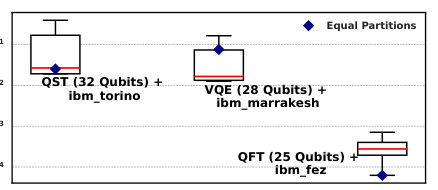
<figcaption class="paper-figure-caption"><b>Fig 1.</b> Figure 1: Estimation error for quantum algorithms across all partitioning strategies, under a fixed shot budget. Equal shot partitioning shows substantial variation across algorithms.</figcaption>
</figure>
<figure class="paper-figure-card">
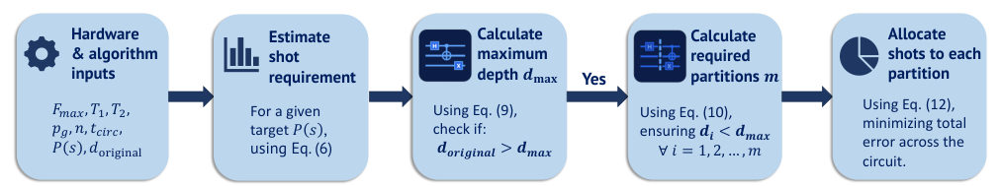
<figcaption class="paper-figure-caption"><b>Fig 2.</b> Figure 2: Overview of the Proposed Framework. The workflow begins with hardware parameters and algorithm specifications, estimates total shot requirements, computes maximum executable depth, partitions circuits exceeding depth limits, and optimally distributes shots across partitions to minimize error while achieving target success probability. 4 Methodology</figcaption>
</figure>
<figure class="paper-figure-card">
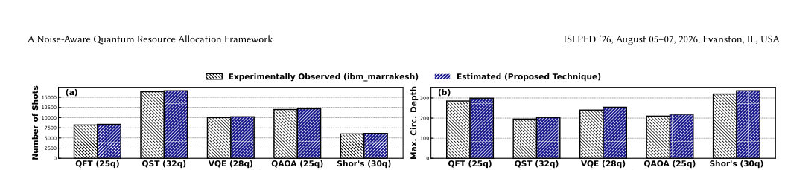
<figcaption class="paper-figure-caption"><b>Fig 3.</b> Figure 3: Experimental validation of proposed analytical model on IBM Marrakesh at 𝑃(𝑠) = 0.95: (a) Shot estimation using Eq. 6 achieves 98.2% accuracy on average, (b) Maximum depth estimation using Eq. 9 achieves 95% accuracy on average.</figcaption>
</figure>
<figure class="paper-figure-card">
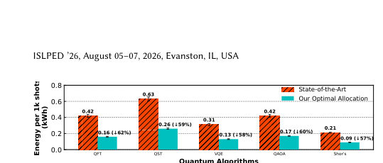
<figcaption class="paper-figure-caption"><b>Fig 4.</b> Figure 4: Energy consumption per 1000 shots for different quantum algorithms comparing state-of-the-art equal shot allocation with our optimal allocation strategy (20 runs, error bars indicate 95% confidence intervals).</figcaption>
</figure>
<figure class="paper-figure-card">
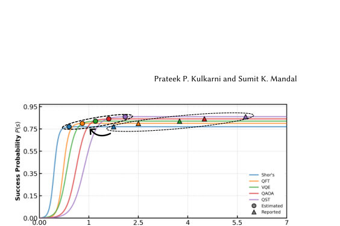
<figcaption class="paper-figure-caption"><b>Fig 5.</b> Figure 5: Our technique identifies optimal shot count, avoid- ing the wasteful over-provisioning.</figcaption>
</figure>
</div>

<p><strong>Summary.</strong> This paper introduces a comprehensive, noise-aware framework to optimize quantum algorithm execution on current hardware. It derives analytical methods to calculate the minimum necessary number of measurement shots and optimally distributes these shots across circuit partitions. The resulting resource allocation strategy significantly reduces both computational error and energy consumption compared to standard practices.</p>
<p><strong>Why it may be interesting.</strong> While focused on computation, the rigorous mathematical treatment of noise accumulation and resource optimization (shot allocation) provides deep insights into the fundamental limits imposed by decoherence in open quantum systems, which is relevant for theoretical modeling of noisy physical platforms.</p>
<details>
<summary>Detailed structure</summary>
<p><strong>Main problem.</strong> The work addresses determining the optimal number of measurement shots required for reliable quantum algorithm execution and developing a noise-aware method to distribute a fixed shot budget across circuit partitions.</p>
<p><strong>Main result.</strong> The proposed analytical framework reduces required shots by about 58% (leading to up to 62% energy reduction) and can reduce the total estimation error by up to 73% compared to conventional, non-optimized approaches.</p>
<p><strong>Method.</strong> It derives closed-form analytical expressions for optimal shot counts and uses Lagrange multipliers to solve a resource allocation problem that minimizes total estimation error subject to fixed budget constraints.</p>
<p><strong>Model / system.</strong> The analysis is applied to near-term quantum computers characterized by noise, limited gate fidelities, and the need for repeated circuit executions (shots). It models success probability using binomial/normal distributions incorporating hardware noise variance.</p>
<p><strong>Key observables.</strong> Shots ($s$), Total Estimation Error ($\mathcal{E}$), Energy Consumption, Maximum Executable Depth ($d_{\max}$).</p>
<p><strong>Important parameters / regimes.</strong> Coherence times ($T_1, T_2$), gate error probability ($p_g$), Circuit Depth ($d$), Target Success Probability ($P(s)$).</p>
<p><strong>Assumptions / limitations.</strong> Approximations are made for circuit execution time ($t_{circ} \approx d \cdot t_g$) and the noise variance calculation relies on suppressing higher-order terms in the noise model.</p>
<p><strong>Figures summary.</strong> Figures illustrate comparisons of estimation error across different partitioning strategies, show the workflow for shot estimation and depth calculation, and compare energy consumption savings between optimal vs. equal shot allocation.</p>
<p><strong>Paper structure.</strong> The paper progresses from establishing the need for reliable shots to deriving analytical expressions for required shots, then developing a framework to calculate maximum feasible circuit depth ($d_{\max}$), and finally solving an optimization problem using Lagrange multipliers to optimally allocate shots across partitions to minimize total error.</p>
</details>
<details>
<summary>Abstract</summary>
<p>Any algorithm execution on quantum computers requires several repeated and costly executions (known as shots) to obtain reliable results. In this work, we propose a closed-form accurate analytical expression to determine optimal number of shots required for reliable execution of any algorithm on a quantum computer. We also present a theoretically grounded technique to distribute fixed shot budget across different partitions in a quantum circuit minimizing the total error. Our proposed analytical model helps to reduce the shots associated with reliable execution of quantum algorithms by about 58\% compared to current practice, in turn reducing the energy consumption by upto 62\%. Furthermore, our proposed optimal shot allocation technique across different partitions reduces total error by up to 73\% compared to conventional approaches.</p>
</details>
<p><sub><a href="#top">↑ back to top</a></sub></p>

<p><a id="paper-2607.23689"></a></p>
<h3 id="fixed-points-in-de-finetti-hierarchies"><a href="http://arxiv.org/abs/2607.23689v1">Fixed points in de Finetti hierarchies</a></h3>
<p><strong>Authors:</strong> Gereon Kossmann, Julius A. Zeiss<br>
<strong>Type:</strong> theory · <strong>Category:</strong> quantum information and computing · <strong>PDF:</strong> <a href="https://arxiv.org/pdf/2607.23689v1">https://arxiv.org/pdf/2607.23689v1</a><br>
<strong>Analysis basis:</strong> full PDF text, analyzed in chunks
<strong>Topic relevance:</strong> <code>entanglement &amp; information structure</code> <strong>3/5</strong> · <code>correlated / nonlocal dissipation</code> <strong>1/5</strong> · <code>driven-dissipative phase transition</code> <strong>1/5</strong> · <code>methods for driven-dissipative</code> <strong>1/5</strong> · <code>non-equilibrium dynamics</code> <strong>1/5</strong> · <code>non-equilibrium universality</code> <strong>1/5</strong></p>
<div class="figure-strip-hint">↔ Scroll figures horizontally</div>
<div class="paper-figures-scroll">
<figure class="paper-figure-card">
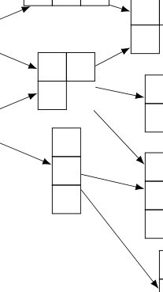
<figcaption class="paper-figure-caption"><b>Fig 1.</b> Figure 1. The Bratteli diagram of the family of symmetric group algebras C [S0] ,→C [S1] ,→· · · ,→C [S4], also known as the Young lattice (cf. Ex. D.4). The Bratteli diagram of the permutation matrix algebras  Ad k </figcaption>
</figure>
</div>

<p><strong>Summary.</strong> This paper extends de Finetti theorems by constraining physical states to be fixed points of quantum channels, thereby generalizing symmetry arguments. Using advanced tools from functional analysis and representation theory, the authors derive tight bounds on quantum capacities and provide efficient algorithms for related problems. This work advances the mathematical understanding of correlations in quantum systems under structural constraints.</p>
<p><strong>Why it may be interesting.</strong> It provides rigorous mathematical machinery to analyze quantum correlations under symmetry constraints, which is crucial for understanding resource theories in open quantum systems and quantum information processing.</p>
<details>
<summary>Detailed structure</summary>
<p><strong>Main problem.</strong> The work studies de Finetti hierarchies when quantum states are constrained to be fixed points of quantum channels, generalizing classical symmetry arguments.</p>
<p><strong>Main result.</strong> They derive several quantitative de Finetti theorems with improved convergence rates and establish efficient computational schemes for related problems like separable inner approximations.</p>
<p><strong>Method.</strong> The approach combines the mean-ergodic theorem with structure theory of conditional expectations, utilizing algebraic tools from representation theory (Schur-Weyl duality, Gelfand-Tsetlin bases).</p>
<p><strong>Model / system.</strong> The focus is on quantum statistical processes and density operators constrained by fixed points of quantum channels ($\Phi(
ho) = 
ho$), which subsumes invariance under compact symmetry groups.</p>
<p><strong>Key observables.</strong> Entanglement-assisted classical capacity, block-wise distortion bounds for measurements, and convergence rates in de Finetti theorems (e.g., $O(\sqrt{\log n}/n)$).</p>
<p><strong>Important parameters / regimes.</strong> The local dimension ($d$), the number of subsystems ($n$), and the error tolerance ($\epsilon$).</p>
<p><strong>Assumptions / limitations.</strong> The results rely on adapting information-theoretic proofs to fixed point constraints, effectively treating symmetries as general fixed point conditions.</p>
<p><strong>Paper structure.</strong> The paper develops tools by first establishing bounds related to conditional expectations and measurements adapted to fixed point algebras. This leads to the derivation of refined de Finetti theorems (double-sided extension, interpolation) and concludes with applications to optimization and error correction.</p>
</details>
<details>
<summary>Abstract</summary>
<p>De Finetti theorems convert permutation symmetry into approximate mixtures of product states and thereby justify a wide range of reductions in classical and quantum statistics. In this work we study de Finetti hierarchies in which the feasible states are additionally constrained to be fixed points of quantum channels, a condition that subsumes invariance under arbitrary compact symmetry groups. Combining the mean-ergodic theorem with the structure theory of conditional expectations, we prove a tight bound on the entanglement-assisted classical capacity of the dual of a conditional expectation, block-wise distortion bounds for informationally complete measurements adapted to fixed point algebras, and an exact type-based refinement of the chain rule for permutation-invariant states. From these tools we derive several de Finetti theorems: a double-sided extension theorem with $O\left(\sqrt{\log n}/n\right)$ convergence, an interpolation theorem whose dimension dependence is governed solely by the block structure of the fixed point algebras and which recovers the dimension-independent classical behavior for maximal tori, and a Bose-symmetric variant. Exploiting Schur-Weyl duality and Gelfand-Tsetlin bases, we further show that the rounding scheme producing certifiably good separable inner approximations for (constrained) separability problems can be implemented in time polynomial in $1/ε$ for fixed local dimensions, complementing the known efficient outer hierarchies. Applications to bilinear optimization under symmetries and to approximate quantum error correction are discussed.</p>
</details>
<p><sub><a href="#top">↑ back to top</a></sub></p>

<p><a id="paper-2607.23048"></a></p>
<h3 id="loss-and-distinguishability-effects-in-heralded-entangled-state-generation-with-gaussian-resources"><a href="http://arxiv.org/abs/2607.23048v1">Loss and distinguishability effects in heralded entangled state generation with Gaussian resources</a></h3>
<p><strong>Authors:</strong> Yun-Long Cao, Xiao-Ye Xu, Wiwittawin Sukmas, Chuan-Feng Li, Guang-Can Guo<br>
<strong>Type:</strong> theory · <strong>Category:</strong> quantum information and computing · <strong>PDF:</strong> <a href="https://arxiv.org/pdf/2607.23048v1">https://arxiv.org/pdf/2607.23048v1</a><br>
<strong>Analysis basis:</strong> full PDF text, analyzed in chunks
<strong>Topic relevance:</strong> <code>interference shaping light</code> <strong>3/5</strong> · <code>Keldysh / 2PI / non-Gaussian methods</code> <strong>1/5</strong> · <code>correlated / nonlocal dissipation</code> <strong>1/5</strong> · <code>driven-dissipative phase transition</code> <strong>1/5</strong> · <code>entanglement &amp; information structure</code> <strong>1/5</strong> · <code>methods for driven-dissipative</code> <strong>1/5</strong></p>
<div class="figure-strip-hint">↔ Scroll figures horizontally</div>
<div class="paper-figures-scroll">
<figure class="paper-figure-card">
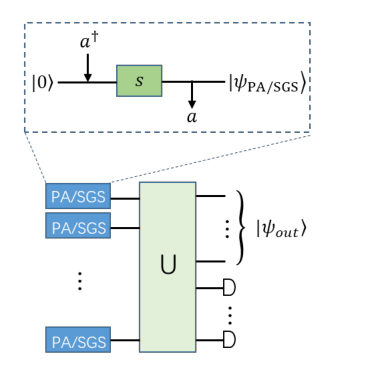
<figcaption class="paper-figure-caption"><b>Fig 1.</b> FIG. 1. Schematic of ideal heralded entanglement generation model with photon addition/subtraction Gaussian source. The photon addition and subtraction operations are realized via Gaussian operations and conditional measurements, which can be arbitrarily configured as required. The single-mode squeezers S and the linear interferometer U are serving as op- timization parameters.</figcaption>
</figure>
<figure class="paper-figure-card">
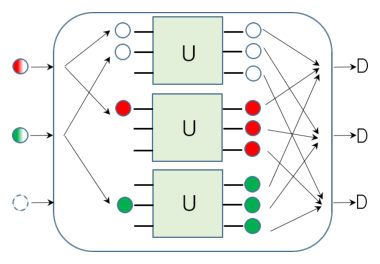
<figcaption class="paper-figure-caption"><b>Fig 2.</b> FIG. 3. Schematic of heralded entanglement generation model with partial distinguishability. Partially distinguish- able photon states are inputted into the first two modes of a three-mode linear interferometer. The states are decomposed into indistinguishable components and distinguishable com- ponents that propagate independently. Both pass through the interferometer to the detectors. The solid rectangle U repre- sents the interferometer for indistinguishable photons. The dashed rectangles represent the virtual interferometer for dis- tinguishable photons.</figcaption>
</figure>
<figure class="paper-figure-card">
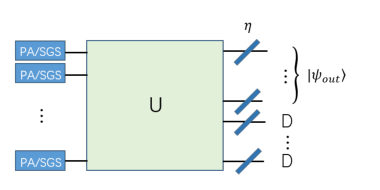
<figcaption class="paper-figure-caption"><b>Fig 3.</b> FIG. 2. Schematic of heralded entanglement generation model with loss. The transmissivity η of beam splitters is used to model the total loss. The single-mode squeezers S and the linear interferometer U are serving as optimization parame- ters.</figcaption>
</figure>
<figure class="paper-figure-card">
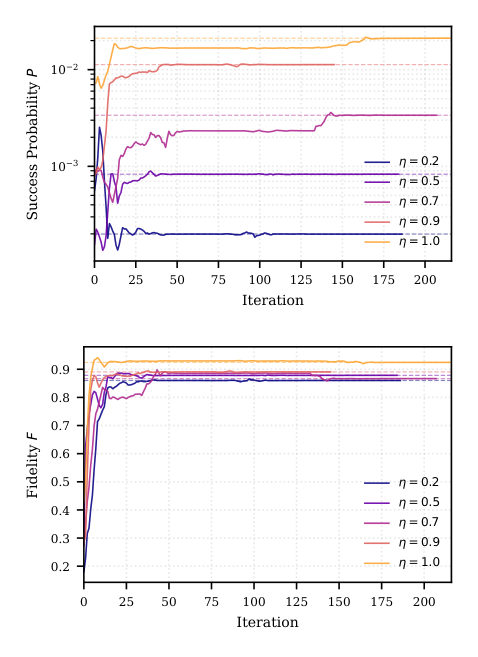
<figcaption class="paper-figure-caption"><b>Fig 4.</b> FIG. 4. Probability and fidelity of the Bell state generated with different efficiency as a function of optimal steps. The weights w1, w2 and ϵ are set to 10, 1 and 10−4.</figcaption>
</figure>
<figure class="paper-figure-card">
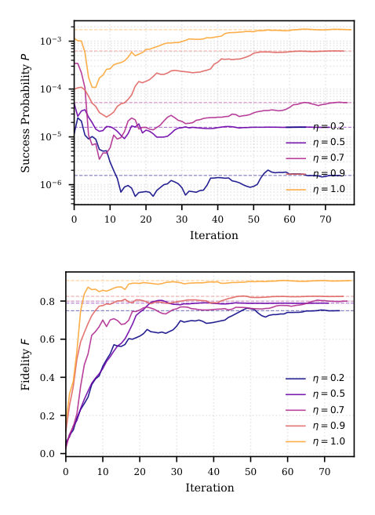
<figcaption class="paper-figure-caption"><b>Fig 5.</b> FIG. 5. Probability and fidelity of the GHZ state generated with different efficiency as a function of optimal steps. The weights w1, w2 and ϵ are set to 10, 1 and 10−4.</figcaption>
</figure>
</div>

<p><strong>Summary.</strong> This work analyzes how optical loss and photon indistinguishability affect generating entangled states using Gaussian resources in photonics. By developing a numerical optimization framework, the authors show that while these imperfections degrade efficiency, fidelity remains high if non-Gaussian operations are strategically employed alongside post-selection. This offers crucial guidelines for building robust quantum photonic circuits.</p>
<p><strong>Why it may be interesting.</strong> It provides practical design guidelines for scalable quantum state engineering on integrated photonic platforms by quantifying the impact of unavoidable experimental imperfections like loss and distinguishability.</p>
<details>
<summary>Detailed structure</summary>
<p><strong>Main problem.</strong> The study quantitatively investigates how optical loss and photon distinguishability degrade the heralded generation of entangled quantum states using Gaussian resources.</p>
<p><strong>Main result.</strong> Non-Gaussian operations, combined with non-vacuum post-selection, can enhance state generation performance under realistic imperfections, showing that losses primarily reduce success probability rather than fundamentally compromising fidelity.</p>
<p><strong>Method.</strong> An efficient numerical framework in a phase-space representation is established to optimize target-state fidelity and success probability by incorporating mode-dependent loss and partial distinguishability statistics.</p>
<p><strong>Model / system.</strong> The system models heralded entanglement generation using multi-mode Gaussian sources (squeezed states) directed through an interferometer, subject to linear loss channels ($\eta$) and modeled photon distinguishability components.</p>
<p><strong>Key observables.</strong> Target-state fidelity ($F$), success probability ($P$), and the trade-off between these two observables mapped via Pareto frontiers.</p>
<p><strong>Important parameters / regimes.</strong> Squeezing parameters, interferometer tuning parameters, optical loss rate ($\eta$), and the degree of photon distinguishability.</p>
<p><strong>Assumptions / limitations.</strong> The analysis treats the system using a combination of Gaussian operations and an approximation for partial distinguishability; post-selection strategies are used to mitigate vacuum noise.</p>
<p><strong>Figures summary.</strong> Figures illustrate the dependence of $P$ and $F$ on loss rates ($\eta$) and non-Gaussian operation counts, showing Pareto frontiers mapping the trade-off between fidelity and success probability for Bell, GHZ, and W states.</p>
<p><strong>Paper structure.</strong> The paper progresses by first establishing the model incorporating loss and distinguishability, then optimizing system parameters (squeezing/interferometer) using numerical methods, and finally demonstrating performance enhancement via non-Gaussian operations and post-selection.</p>
</details>
<details>
<summary>Abstract</summary>
<p>The effects of optical loss and photon distinguishability on the heralded generation of entangled states based on Gaussian resources are quantitatively investigated. By incorporating mode-dependent loss and the statistical characteristics of partially distinguishable photons into a phase-space representation, an efficient numerical framework is established to optimize target-state fidelity and success probability, with a specific focus on the enhancement triggered by non-Gaussian operations such as photon addition and subtraction. The numerical optimization results indicate that a non-vacuum post-selection strategy within a dual-rail encoding framework, combined with the simultaneous tuning of squeezing parameters and the interferometer network, effectively suppresses vacuum noise, enabling the generation of high-fidelity Bell, GHZ, and W states under realistic experimental constraints. The results show that introducing non-Gaussian operations can successfully enhance the state generation performance under realistic imperfections analogous to the enhancements observed under ideal conditions. This study demonstrates that experimental imperfections primarily scale down the success probability rather than fundamentally compromising the state fidelity, providing practical design guidelines for scalable state engineering on integrated photonic platforms.</p>
</details>
<p><sub><a href="#top">↑ back to top</a></sub></p>

<p><a id="paper-2607.23625"></a></p>
<h3 id="observation-of-correlation-driven-topological-transport-and-robust-ferromagnetism-in-2d-crsmath708math"><a href="http://arxiv.org/abs/2607.23625v1">Observation of correlation-driven topological transport and robust ferromagnetism in 2D CrS$_2$</a></h3>
<p><strong>Authors:</strong> Sk Md Obaidulla, M. Nur Hasan, Dayal Das, Rafiqul Alam, Antonio Supina, Muhammad Awais Aslam, Sherif Kamal, Iva Šarić Jankovic, Aleksandar Matkovic, Christian Teichert, Atindra Nath Pal, Heike C. Herper, Marko Kralj<br>
<strong>Type:</strong> both · <strong>Category:</strong> strongly correlated electrons · <strong>PDF:</strong> <a href="https://arxiv.org/pdf/2607.23625v1">https://arxiv.org/pdf/2607.23625v1</a><br>
<strong>Analysis basis:</strong> full PDF text, analyzed in chunks
<strong>Topic relevance:</strong> <code>spintronics-quantum-optics interface</code> <strong>3/5</strong> · <code>analog quantum simulation</code> <strong>2/5</strong> · <code>Kondo &amp; dissipative impurity</code> <strong>1/5</strong> · <code>exotic spin models in light-matter</code> <strong>1/5</strong> · <code>non-equilibrium dynamics</code> <strong>1/5</strong></p>
<div class="figure-strip-hint">↔ Scroll figures horizontally</div>
<div class="paper-figures-scroll">
<figure class="paper-figure-card">
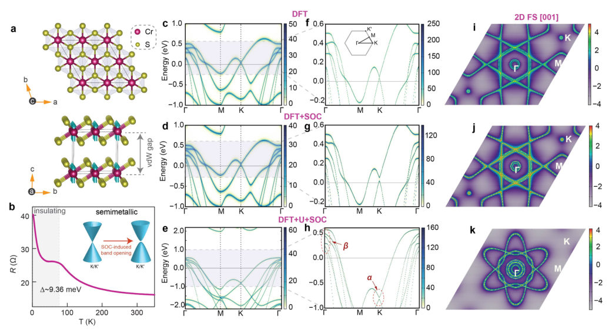
<figcaption class="paper-figure-caption"><b>Fig 1.</b> FIG. 1. Crystal structure, electronic transport, spectral function, and 2D FS of 1T-CrS2. a, Top and side views of the 1T-CrS2 crystal structure, illustrating the vdW gap between adjacent layers. Cr and S atoms are shown as cherry and yellow spheres, respectively. b, R(T), showing a semimetal-to-insulator crossover. The inset schematically illustrates the lifting of the band degeneracy at the K/K′ points. c–h, Calculated spectral function (SF) along the high-symmetry path (Γ–M–K–Γ), indicated in the inset of f, obtained using c,f spin-polarized DFT without SOC, d,g DFT+SOC, and e,h DFT+U+SOC. In the absence of SOC (c,f), multiple dispersive bands cross the Fermi level. Including SOC (d,g)...</figcaption>
</figure>
<figure class="paper-figure-card">
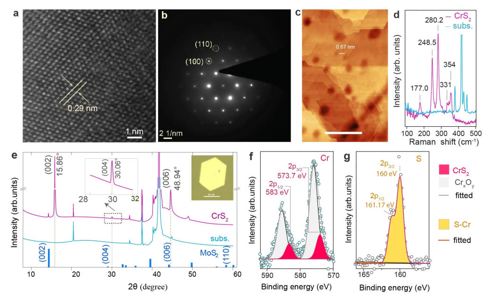
<figcaption class="paper-figure-caption"><b>Fig 2.</b> FIG. 2. Structural and chemical characterization of 1T-CrS2. a, HRTEM image of 1T-CrS2, showing a well-ordered hexagonal lattice with an interplanar spacing of ∼0.29 nm. b, SAED pattern confirming the crystalline nature and hexagonal symmetry, indexed to the (100) and (110) planes. c, AFM of CrS2 with step-height (0.67 nm) displaying layered nature. Scale bar: 1 µm. d, Raman spectra of CrS2 (magenta) compared with background signal (cyan), displaying characteristic vibrational modes. e, XRD pattern of CrS2 (cherry) with background (cyan), and showing prominent (00l) reflections, consistent with a layered structure. Reference peaks from CVD-synthesized MoS2 are included for comparison....</figcaption>
</figure>
<figure class="paper-figure-card">
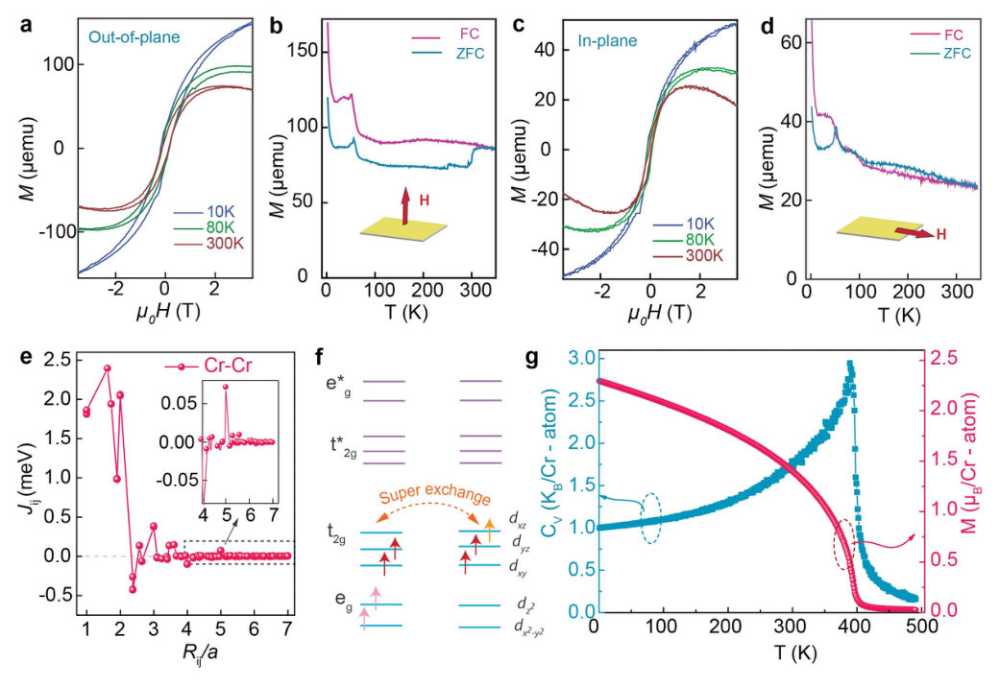
<figcaption class="paper-figure-caption"><b>Fig 3.</b> FIG. 3. Magnetic properties, Heisenberg exchange interactions, and finite-temperature behavior of 1T-CrS2. a,b, Out-of-plane field-dependent magnetization, M(H), and temperature-dependent magnetization, M(T). The hysteresis loop confirms an out-of-plane easy axis. c,d, In-plane field-dependent magnetization, M(H), and temperature-dependent magnetization, M(T). Temperature-dependent magnetization b,c,, M(T) measured under an applied field of 100 Oe. e, Calculated Heisenberg exchange coupling parameters, Jij, as a function of the normalized Cr–Cr distance (Rij/a). The nearest-neighbor interaction is strongly ferromagnetic. f, Schematic illustration of the superexchange mechanism in 1T-CrS2....</figcaption>
</figure>
<figure class="paper-figure-card">
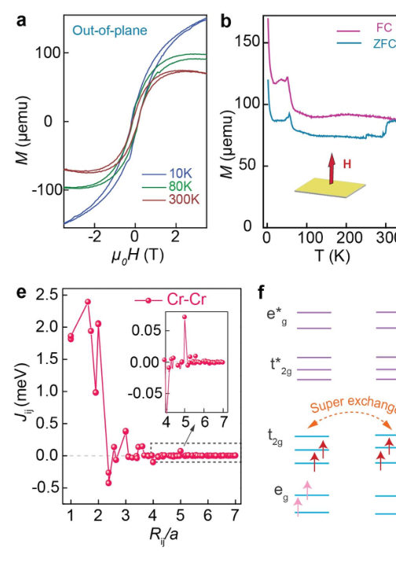
<figcaption class="paper-figure-caption"><b>Fig 4.</b> Fig. 3e shows the calculated isotropic exchange parameters Jij as a function of the normalized Cr–Cr distance (Rij/a). The calculated exchange interactions are predominantly ferromagnetic and remain finite over several neighbouring shells. Interestingly, although the nearest-neighbour exchange interaction is ferromagnetic, the second- and third-nearest-neighbour couplings become comparatively stronger. This behaviour reflects the itinerant nature of magnetic exchange in 1T- CrS2, where indirect Cr–S–Cr hybridization enhances intermediate-range exchange pathways beyond the shortest Cr–Cr distance. Such an exchange hierarchy originates from the edge-sharing CrS6 octahedral environment...</figcaption>
</figure>
<figure class="paper-figure-card">
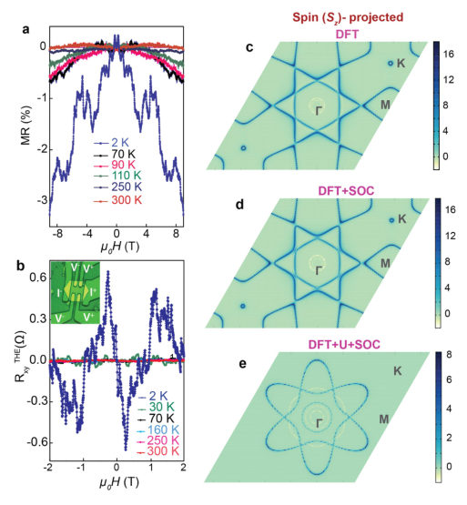
<figcaption class="paper-figure-caption"><b>Fig 5.</b> FIG. 4. Magnetotransport and partial FS topology of 1T-CrS2. a, MR measured at different temperatures (2–300 K), showing a pronounced negative MR at low temperatures. b, Hall resistance RT HE xy as a function of magnetic field at various temperatures. The nonlinear behaviour at low temperatures indicates multiband transport, whereas the nearly linear response at higher temperatures suggests a dominant single-carrier contribution. Inset: Optical image of the device and the electrical-contact configuration used for transport measurements. c–e, Calculated 2D spin-projected (Sz) FS. The calculations were performed using spin-polarized DFT without SOC (c), fully relativistic DFT+SOC (d), and...</figcaption>
</figure>
</div>

<p><strong>Summary.</strong> This work reports the synthesis and characterization of $1T-	ext{CrS}_2$, demonstrating it as a promising layered magnet. The research combines experimental transport measurements showing topological effects with sophisticated theoretical calculations that prove these phenomena arise from the cooperative action of electronic correlations and spin-orbit coupling in this correlated material.</p>
<p><strong>Why it may be interesting.</strong> The interplay between strong electron correlations (Hubbard physics), spin-orbit coupling, and emergent topology is central to modern condensed matter theory, making this highly relevant for understanding correlated materials beyond simple band theory.</p>
<details>
<summary>Detailed structure</summary>
<p><strong>Main problem.</strong> The challenge is realizing a single 2D platform that robustly integrates correlated magnetism, electronic topology, and transport phenomena in layered magnets.</p>
<p><strong>Main result.</strong> The study establishes $1T-	ext{CrS}_2$ as a rare correlated 3d layered ferromagnet where electronic correlations and spin-orbit coupling cooperatively drive emergent topological transport.</p>
<p><strong>Method.</strong> A combination of experimental techniques (CVD growth, transport/magnetization measurements) and advanced theoretical calculations ($    ext{DFT}+U+ ext{SOC}$, Heisenberg exchange) was employed.</p>
<p><strong>Model / system.</strong> The physical system is layered $1T-	ext{CrS}_2$, a transition-metal dichalcogenide known for its octahedral coordination, which promotes strong electron correlations and intrinsic magnetism.</p>
<p><strong>Key observables.</strong> Robust ferromagnetism with out-of-plane easy-axis anisotropy; semimetal–insulator crossover near 80 K; topological Hall effect below 30 K; gap opening upon inclusion of SOC/correlations.</p>
<p><strong>Important parameters / regimes.</strong> Curie temperature ($T_C$) above room temperature; low temperatures ($ ext{T} &lt; 30 ext{ K}$) for topological effects; correlation strength ($U$).</p>
<p><strong>Assumptions / limitations.</strong> The study assumes the stability and synthesizability of the $1T$ polymorph via CVD, and uses theoretical models (like $\Delta_\alpha(T)$) to describe temperature-dependent crossovers.</p>
<p><strong>Figures summary.</strong> Figures show crystal structures, temperature dependence of resistance revealing a crossover, calculated spectral functions comparing DFT vs. SOC vs. correlated methods, and 2D Fermi surface projections under different theoretical treatments.</p>
<p><strong>Paper structure.</strong> The paper progresses by first reporting the synthesis (CVD) and basic magnetic/transport measurements. It then uses advanced electronic structure calculations ($  ext{DFT}    o   ext{DFT}+   ext{SOC}    o   ext{DFT}+U+ ext{SOC}$) to explain the observed phenomena, culminating in a unified picture of correlation-driven topological transport.</p>
</details>
<details>
<summary>Abstract</summary>
<p>The realization of correlated layered magnets hosting robust ferromagnetism with emergent topological transport remains a key challenge in quantum materials. Here we report the first catalyst-free chemical vapour deposition growth of layered 1T-CrS$_2$, establishing a highly stable vdWs ferromagnet with an out-of-plane easy-axis anisotropy and a Curie temperature above room temperature. Transport measurements reveal a semimetal--insulator crossover near 80 K and pronounced negative magnetoresistance up to 350 K. A topological Hall effect emerges below 30 K, a rare signature of correlated transport in layered transition-metal dichalcogenide ferromagnets. First-principles calculations show that spin--orbit coupling gaps Dirac-like crossings, while electronic correlations reconstruct the Fermi surface by suppressing electron pockets and reducing the carrier density, enhancing momentum-dependent out-of-plane spin polarization. Magnetic measurements, supported by Heisenberg exchange calculations, reveal strong nearest-neighbour ferromagnetic exchange that stabilizes long-range ferromagnetism. Our results establish 1T-CrS$_2$ as a rare correlated 3$d$ layered ferromagnet in which electronic correlations and spin--orbit coupling cooperatively drive emergent topological transport.</p>
</details>
<p><sub><a href="#top">↑ back to top</a></sub></p>

<p><a id="paper-2607.24549"></a></p>
<h3 id="self-energy-pole-optimization-of-superconductivity-in-the-bilayer-hubbard-model"><a href="http://arxiv.org/abs/2607.24549v1">Self-energy pole optimization of superconductivity in the bilayer Hubbard model</a></h3>
<p><strong>Authors:</strong> Taka-Shi Fujiwara, Shiro Sakai, Ryotaro Arita<br>
<strong>Type:</strong> theory · <strong>Category:</strong> strongly correlated electrons · <strong>PDF:</strong> <a href="https://arxiv.org/pdf/2607.24549v1">https://arxiv.org/pdf/2607.24549v1</a><br>
<strong>Analysis basis:</strong> full PDF text, analyzed in chunks
<strong>Topic relevance:</strong> <code>Keldysh / 2PI / non-Gaussian methods</code> <strong>3/5</strong> · <code>analog quantum simulation</code> <strong>3/5</strong> · <code>driven-dissipative phase transition</code> <strong>1/5</strong> · <code>methods for driven-dissipative</code> <strong>1/5</strong></p>
<div class="figure-strip-hint">↔ Scroll figures horizontally</div>
<div class="paper-figures-scroll">
<figure class="paper-figure-card">
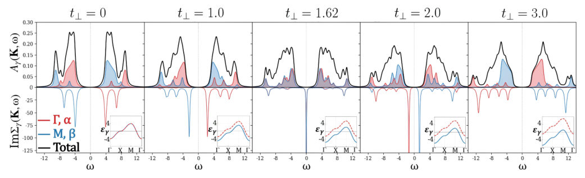
<figcaption class="paper-figure-caption"><b>Fig 1.</b> FIG. 1. Spectral function Aγ(K, ω) (top row) and imaginary part of the normal self-energy Im Σnor γ (K, ω) (bottom row) at half filling (δ = 0) and U = 12 for t⊥= 0, 1.0, 1.62, 2.0, and 3.0 (left to right). Red and blue curves denote the Γ-α and M-β components; the black curve in the top row is the total DOS. The poles of Im Σnor γ , located inside the Mott gap, cross around t⊥≃t⊥,c ≃1.62, identifying the MI–BI crossover as a rearrangement of these poles between the two components. Insets in the lower panels show the bare (U = 0) band dispersions εγ(k) along Γ-X-M-Γ.</figcaption>
</figure>
<figure class="paper-figure-card">

<figcaption class="paper-figure-caption"><b>Fig 2.</b> FIG. 2. Superconducting order parameters in the (U, t⊥) plane at δ = 0.02: ⟨cα Γ↑cα Γ↓⟩for the Γ-α component (left) and ⟨cβ M↑cβ M↓⟩for the M-β component (right), on a common color scale. The opposite signs (Γ-α &lt; 0: blue, M-β &gt; 0: red) indicate s±-wave symmetry. The phase diagram at half filling is superimposed (M: metal, MI: Mott insulator, BI: band in- sulator; the MI–BI boundary is determined in Sec. S5). Both components are largest near the MI–BI boundary and peak toward the metallic region.</figcaption>
</figure>
<figure class="paper-figure-card">

<figcaption class="paper-figure-caption"><b>Fig 3.</b> FIG. 3. Real-frequency results in the superconducting state at U = 12 and δ = 0.02 for t⊥= 1.0, 1.62 (≃t⊥,c), and 2.0 (left to right). From top to bottom: spectral function Aγ(K, ω) (Γ-α: red, M-β: blue); anomalous self-energy Σano γ (K, ω) for Γ-α and then M-β (solid: Re Σano, dashed: Im Σano); and Im Xγ for Γ-α and then M-β with X ∈{Σnor, W, Σnor + W} (Im Σnor γ : dashed, Im Wγ: dash-dotted, sum: solid). Per- panel scale factors (except Aγ) are given in the upper-left corner. Black arrows mark the pole-to-pole cancellation be- tween Σnor γ and Wγ, derived analytically in Sec. S3.</figcaption>
</figure>
<figure class="paper-figure-card">

<figcaption class="paper-figure-caption"><b>Fig 4.</b> FIG. 4. Hidden-fermion fit of Σnor γ (K, ω) (top) and Σano γ (K, ω) (bottom) at U = 12 and δ = 0.02: the M-β com- ponent at t⊥= 1.0 (left) and the Γ-α component at t⊥= 2.0 (right). Blue curves are the DCA data and red curves are the fitting with the hidden-fermion model [Eqs. (7) and (8)]; solid and dashed curves denote real and imaginary parts. A single low-energy hidden fermion reproduces the pole structure of both channels.</figcaption>
</figure>
</div>

<p><strong>Summary.</strong> This theoretical study analyzes the bilayer Hubbard model, showing that superconducting pairing is optimally enhanced near a Mott Insulator–Band Insulator crossover. This enhancement mechanism is driven by the cooperative development of low-energy self-energy poles in both electronic bands. The work demonstrates that interlayer hopping ($t_\perp$) acts as a tunable knob to control this exotic pairing mechanism.</p>
<p><strong>Why it may be interesting.</strong> The concept of using controllable parameters ($t_\perp$) to tune emergent fermionic excitations (self-energy poles) for optimizing superconductivity is highly relevant to understanding engineered quantum materials and strongly correlated physics.</p>
<details>
<summary>Detailed structure</summary>
<p><strong>Main problem.</strong> The study investigates how the real-frequency structure of the self-energy dictates superconductivity enhancement in the bilayer Hubbard model.</p>
<p><strong>Main result.</strong> Superconductivity is maximized near the Mott Insulator–Band Insulator (MI–BI) crossover boundary, where low-energy self-energy poles from both bands cooperatively enhance $s^{\pm}$-wave pairing.</p>
<p><strong>Method.</strong> The research employs the Dynamical Cluster Approximation (DCA) combined with an equation of motion approach to analyze spectral functions and self-energies.</p>
<p><strong>Model / system.</strong> The system is the bilayer Hubbard model on a square lattice, described by hopping parameters ($t, t_\perp$) and onsite repulsion ($U$). The analysis focuses on bonding ($eta$) and antibonding ($\alpha$) bands.</p>
<p><strong>Key observables.</strong> Self-energy poles (real-frequency structure), superconducting order parameter ($\Delta$), band-selective pseudogaps, and the excitation gap $\Delta$.</p>
<p><strong>Important parameters / regimes.</strong> Interlayer hopping ($t_\perp$), onsite repulsion ($U$), doping level ($\delta=0.02$ to $0.05$), and the MI–BI crossover boundary.</p>
<p><strong>Assumptions / limitations.</strong> The analysis relies on interpreting self-energies via a 'hidden-fermion model' which successfully captures pole structure across the crossover, although this ansatz fails at higher doping levels.</p>
<p><strong>Figures summary.</strong> Figures map out superconducting order parameters in $(U, t_\perp)$ planes, showing maxima near the MI–BI boundary. Other figures illustrate spectral functions and self-energy evolution during the MI–BI crossover via pole crossing.</p>
<p><strong>Paper structure.</strong> The paper systematically analyzes the self-energy poles across doping regimes ($\delta=0$ to $\delta=0.05$) and varying $t_\perp$. It first establishes the MI–BI crossover mechanism, then uses this structure to explain enhanced pairing, culminating in mapping out phase boundaries.</p>
</details>
<details>
<summary>Abstract</summary>
<p>We study the real-frequency structure of the self-energy in the bilayer Hubbard model, using the dynamical cluster approximation. At half filling, the Mott insulator-band insulator (MI-BI) crossover involves a rearrangement of self-energy poles between the bonding and antibonding bands; these poles cross as the interlayer hopping $t_{\perp}$ is varied. Upon doping, this pole structure produces a band-selective pseudogap and enhances $s^{\pm}$-wave superconductivity. The order parameter is maximized near the MI-BI boundary, where low-energy anomalous self-energy poles develop simultaneously in both bands and cooperatively enhance the pairing. We further show that these self-energy poles can be interpreted as emergent fermionic excitations, offering an enhanced-pairing mechanism in common with the single-layer Hubbard model. The controllability of these poles through $t_{\perp}$ makes the bilayer system an unconventional platform for optimizing strongly correlated superconductivity.</p>
</details>
<p><sub><a href="#top">↑ back to top</a></sub></p>

<p><a id="paper-2607.24679"></a></p>
<h3 id="sign-optimized-quantum-monte-carlo"><a href="http://arxiv.org/abs/2607.24679v1">Sign-optimized Quantum Monte Carlo</a></h3>
<p><strong>Authors:</strong> Julius S. Herz, Robin Schäfer, Matías G. Gonzalez, David J. Luitz<br>
<strong>Type:</strong> theory · <strong>Category:</strong> numerical methods · <strong>PDF:</strong> <a href="https://arxiv.org/pdf/2607.24679v1">https://arxiv.org/pdf/2607.24679v1</a><br>
<strong>Analysis basis:</strong> full PDF text, analyzed in chunks
<strong>Topic relevance:</strong> <code>analog quantum simulation</code> <strong>3/5</strong> · <code>exotic spin models in light-matter</code> <strong>3/5</strong> · <code>methods for driven-dissipative</code> <strong>1/5</strong> · <code>non-equilibrium dynamics</code> <strong>1/5</strong></p>
<div class="figure-strip-hint">↔ Scroll figures horizontally</div>
<div class="paper-figures-scroll">
<figure class="paper-figure-card">

<figcaption class="paper-figure-caption"><b>Fig 1.</b> Figure 1: (Left) Maple-leaf lattice with its three symmetry-inequivalent couplings: Jd (amber) along dimers, Jt (teal) along triangles, and Jh (blue) along hexagons. (Right) Computational phase diagram of the MLL for T = 0.5J: the color indicates the basis with the largest average QMC sign (computational/dimer/trimer eigen- basis in blue/amber/teal; optimized 2-spin/3-spin clustering in purple/red) on an N = 54 site lattice. The transparency indicates the average sign. The isotropic point Jh = Jt = Jd is marked by the black star.</figcaption>
</figure>
<figure class="paper-figure-card">

<figcaption class="paper-figure-caption"><b>Fig 2.</b> Figure 2: (Left) average QMC sign 〈s〉as a function of the generalized non- stoquasticity S(UA, UB) along the optimization trajectory for the fully-frustrated lad- der (shown in the inset) of N = 24 sites at T = J. (Right) the same for the triangular ladder.</figcaption>
</figure>
<figure class="paper-figure-card">

<figcaption class="paper-figure-caption"><b>Fig 3.</b> Figure 3: (Left) Average sign against temperature for the triangular ladder system simulated in bases resulting from the optimization with randomly distributed initial conditions. For each class of bases we plot one sign–temperature curve. For compari- son, the sign-temperature curves for the computational basis and the rung eigenbasis are also plotted. (Right) Energy obtained from QMC simulations in the same bases. The black line represents the ED result for an N = 12 lattice. The simulations are performed on an N = 24 triangular ladder.</figcaption>
</figure>
<figure class="paper-figure-card">

<figcaption class="paper-figure-caption"><b>Fig 4.</b> Figure 4: (Left) Sign gradient at the middle and end points of the optimization pro- cedure. (Right) Non-stoquasticity gradient at the middle and end points of the opti- mization procedure. (Middle) Comparison between the two gradients at the middle point of the optimization (data taken from the left and right panels). Every point i represents a component of the gradient in the 32-dimensional space defined by the parametrization (see main text). We choose ε = 0.075. The simulations are per- formed on an N = 20 triangular ladder at T = J.</figcaption>
</figure>
<figure class="paper-figure-card">

<figcaption class="paper-figure-caption"><b>Fig 5.</b> Figure 5: Average QMC sign for the maple-leaf lattice on the (θ,φ) grid, obtained from simulations in three different bases at T = 1.2 and 0.6. The lattice consists of N = 54 sites with periodic boundary conditions (see Appendix E for the full cluster). The limiting cases of free dimers (θ = 0), free trimers (θ = π/2,φ = 0), and the honeycomb lattice (φ = π/2) are indicated in white.</figcaption>
</figure>
</div>

<p><strong>Summary.</strong> This paper introduces a novel basis optimization technique to alleviate the sign problem plaguing Quantum Monte Carlo simulations. By systematically rotating the local Hilbert space basis based on minimizing non-stoquasticity, the authors achieve improved simulation accuracy and reach lower temperatures for frustrated magnetic models. This provides a powerful new computational tool for studying strongly correlated quantum matter.</p>
<p><strong>Why it may be interesting.</strong> While focused on condensed matter magnetism, the core methodology—systematic numerical optimization of simulation representations using advanced gradient descent techniques—is highly relevant to developing robust computational tools for complex quantum systems in AMO physics.</p>
<details>
<summary>Detailed structure</summary>
<p><strong>Main problem.</strong> The primary challenge addressed is the sign problem in Quantum Monte Carlo (QMC) simulations, which causes exponential statistical fluctuations for certain quantum many-body systems.</p>
<p><strong>Main result.</strong> The authors developed a basis optimization technique that significantly mitigates the sign problem by rotating the local Hilbert space basis, enabling simulations at lower temperatures than previous state-of-the-art methods.</p>
<p><strong>Method.</strong> The method involves optimizing the local basis via unitary rotations, guided by minimizing a generalized non-stoquasticity measure ($S(U)$), which is hypothesized to coincide with maximizing the average sign ($\langle s 
angle$).</p>
<p><strong>Model / system.</strong> The approach is benchmarked on frustrated Heisenberg antiferromagnets on lattices such as the one-dimensional chain, the two-dimensional maple-leaf lattice (MLL), and ladder systems.</p>
<p><strong>Key observables.</strong> Average Sign ($\langle s 
angle$), Non-stoquasticity ($S(U)$), Specific Heat Capacity.</p>
<p><strong>Important parameters / regimes.</strong> Temperature ($T$) and various coupling strengths defining the magnetic interactions ($J$).</p>
<p><strong>Assumptions / limitations.</strong> The optimization relies on the assumption that minimizing non-stoquasticity guides the system toward maximizing the average sign, although this is noted to be a sufficient but not necessary condition for solving the problem.</p>
<p><strong>Figures summary.</strong> Figures illustrate computational phase diagrams showing optimal basis changes across coupling strengths (MLL), and plots comparing $\langle s 
angle$ versus $S(U)$ for different ladder systems.</p>
<p><strong>Paper structure.</strong> The paper progresses from defining the sign problem in SSE-QMC to proposing a general unitary basis rotation scheme, detailing the two-stage optimization process (Adam/LBFGS), and finally benchmarking this technique on specific frustrated lattice models.</p>
</details>
<details>
<summary>Abstract</summary>
<p>The sign problem breaks the polynomial scaling of Quantum Monte Carlo methods. We alleviate it by rotation of the local basis of the Hilbert space, such that the phase of off-diagonal matrix elements of the rotated Hamiltonian is minimized. These minima coincide with optima of the average sign. We benchmark our method for frustrated Heisenberg antiferromagnets in one dimension and on the two-dimensional maple-leaf lattice. Our approach reveals more efficient bases with improved sign in a large part of the parameter space for all models considered, enabling us to reach lower temperatures, on par with state-of-the-art numerical linked cluster expansions which we directly compare to.</p>
</details>
<p><sub><a href="#top">↑ back to top</a></sub></p>

<p><a id="paper-2607.24105"></a></p>
<h3 id="simultaneous-estimation-of-relative-phase-and-coherence-in-astronomical-interferometry"><a href="http://arxiv.org/abs/2607.24105v1">Simultaneous estimation of relative phase and coherence in astronomical interferometry</a></h3>
<p><strong>Authors:</strong> Yawen Tang, Wei Ye, Lu Qin, Jinxin Li, Xinxin Wang, Zunlue Zhu, Shoukang Chang, Shao-Ming Fei, Xingdong Zhao<br>
<strong>Type:</strong> theory · <strong>Category:</strong> quantum information and computing · <strong>PDF:</strong> <a href="https://arxiv.org/pdf/2607.24105v1">https://arxiv.org/pdf/2607.24105v1</a><br>
<strong>Analysis basis:</strong> full PDF text, analyzed in chunks
<strong>Topic relevance:</strong> <code>quantum measurements</code> <strong>3/5</strong> · <code>interference shaping light</code> <strong>2/5</strong> · <code>entanglement &amp; information structure</code> <strong>1/5</strong> · <code>measurement-induced transitions</code> <strong>1/5</strong> · <code>quantum optics experiment</code> <strong>1/5</strong></p>
<div class="figure-strip-hint">↔ Scroll figures horizontally</div>
<div class="paper-figures-scroll">
<figure class="paper-figure-card">

<figcaption class="paper-figure-caption"><b>Fig 1.</b> Figure 1 (Color online) Comparison of two schemes for the simultaneous estimation of the relative phase and the degree of coherence in astronomi- cal interferometry. (a) Direct interferometry scheme: two modes, ˆa1 and ˆa2, of the stellar state ˆρs are collected by separated telescopes (A and B) and physically interfered. Each mode undergoes transmission loss characterized by an identical transmissivity T. (b) Continuous-variable quantum telepor- tation scheme: a two-mode squeezed vacuum ˆρe with modes ˆa3 and ˆa4 is distributed via lossy channels of transmissivity T. At telescope A, modes ˆa1 and ˆa3 are combined on a beam splitter, and homodyne outcomes q5 and p6 are sent via a classical...</figcaption>
</figure>
<figure class="paper-figure-card">

<figcaption class="paper-figure-caption"><b>Fig 2.</b> Figure 2 (Color online) The QCRB for the direct interferometry and continuous-variable quantum teleportation schemes as a function of the to- tal mean photon number ϵ with T = 1 and r = 1. The solid and dashed lines correspond to the direct interferometry and continuous-variable quan- tum teleportation schemes, respectively.</figcaption>
</figure>
<figure class="paper-figure-card">

<figcaption class="paper-figure-caption"><b>Fig 3.</b> Figure 3 (Color online) The optimized difference fopt for the direct in- terferometry and continuous-variable quantum teleportation schemes as a function of the total mean photon number ϵ with T = 1, ϕ = π/2 and r = 0.5. The solid and dashed lines correspond to the direct interferome- try and continuous-variable quantum teleportation schemes, respectively.</figcaption>
</figure>
<figure class="paper-figure-card">

<figcaption class="paper-figure-caption"><b>Fig 4.</b> Figure 4 (Color online) The optimal parameter zopt for the direct interfer- ometry and continuous-variable quantum teleportation schemes as a function of the total mean photon number ϵ and the relative phase ϕ. (a) the direct in- terferometry with T = 1 and γ = 0.6. (b) the continuous-variable quantum teleportation schemes with T = 1, r = 1 and γ = 0.6.</figcaption>
</figure>
<figure class="paper-figure-card">

<figcaption class="paper-figure-caption"><b>Fig 5.</b> Figure 6 (Color online) The optimized CRB for the direct interferometry and continuous-variable quantum teleportation schemes as a function of the baseline length L with ϵ = 3, ϕ = π/2, r = 0.5 and the transmission loss coefficient α = 0.2 dB/Km. The solid and dashed lines correspond to the di- rect interferometry and continuous-variable quantum teleportation schemes, respectively.</figcaption>
</figure>
</div>

<p><strong>Summary.</strong> This paper theoretically investigates how best to estimate both the phase and coherence of light collected by astronomical interferometers. It compares two methods—direct measurement versus quantum teleportation—and finds that direct interferometry is generally superior, though the optimal method depends on the baseline length. The work establishes key theoretical bounds for achievable estimation precision.</p>
<p><strong>Why it may be interesting.</strong> This work directly applies advanced quantum estimation theory to a fundamental problem in astrophysics (interferometry), providing quantitative comparisons between different quantum measurement protocols for parameter estimation.</p>
<details>
<summary>Detailed structure</summary>
<p><strong>Main problem.</strong> The core problem is the simultaneous estimation of both the relative phase ($\phi$) and the degree of coherence ($\mu$ or $\gamma$) in astronomical interferometry, as joint recovery is necessary for true imaging.</p>
<p><strong>Main result.</strong> The direct interferometry scheme consistently achieves a lower Quantum Cramér-Rao Bound (QCRB) compared to the continuous-variable quantum teleportation scheme. Furthermore, performance depends on baseline length: direct methods are better for short baselines, while teleportation excels at long baselines.</p>
<p><strong>Method.</strong> The analysis uses Gaussian multiparameter quantum estimation theory, comparing the Classical and Quantum Fisher Information Matrices (CRB vs QCRB) derived for two distinct measurement schemes.</p>
<p><strong>Model / system.</strong> The physical system is astronomical interferometry using separated telescopes to measure light coherence. The theoretical models compared are the direct interferometry scheme and a continuous-variable quantum teleportation scheme utilizing squeezed vacuum states.</p>
<p><strong>Key observables.</strong> Relative phase ($\phi$), degree of coherence ($\gamma$ or $\mu$), Quantum Cramér-Rao Bound (QCRB), and Classical Cramér-Rao Bound (CRB).</p>
<p><strong>Important parameters / regimes.</strong> Total mean photon number ($\epsilon$), transmissivity ($T$), baseline length ($L$), and the coherence parameter ($\gamma$).</p>
<p><strong>Assumptions / limitations.</strong> The analysis relies on Gaussian measurement theory, and specific comparisons are made under assumptions regarding transmission loss coefficients.</p>
<p><strong>Figures summary.</strong> Figures compare QCRB vs. photon number ($\epsilon$) for different coherences ($\gamma$); they also plot the optimized difference between CRB and QCRB, and show a crossover behavior in performance versus baseline length ($L$).</p>
<p><strong>Paper structure.</strong> The paper introduces the joint estimation problem, develops theoretical frameworks for both direct interferometry and quantum teleportation schemes using Fisher information matrices, derives and compare the resulting QCRBs, and finally analyzes the dependence of precision on environmental factors like transmission loss and baseline distance.</p>
</details>
<details>
<summary>Abstract</summary>
<p>Astronomical interferometry is a cornerstone technique for high-resolution stellar imaging and observational astrophysics, extracting spatial information from the coherence of light collected by separated telescopes. Since the degree of coherence is complex, a genuine imaging task requires the joint recovery of the modulus and the relative phase, instead of independent singleparameter estimations. We investigate the simultaneous estimation of both parameters based on direct interferometry scheme and continuou-svariable quantum teleportation scheme. We find that in simultaneous estimation the direct interferometry scheme consistently yields a lower quantum Cramér-Rao bound, demonstrating its superiority over the continuous-variable quantum teleportation scheme. Furthermore, we establish the conditions under which the classical Cramér-Rao bound for Gaussian measurements saturates the quantum Cramér-Rao bound, identifying heterodyne detection as a near-optimal measurement scheme in the large mean photon number regime. An analysis of transmission loss reveals that the direct interferometry scheme yields superior precision in the short-baseline regime, whereas the continuous-variable quantum teleportation scheme outperforms it at longer baselines.</p>
</details>
<p><sub><a href="#top">↑ back to top</a></sub></p>

<p><a id="paper-2607.22942"></a></p>
<h3 id="single-crystal-growth-structural-and-magnetic-properties-of-ceznmath760mathgamath761math"><a href="http://arxiv.org/abs/2607.22942v1">Single crystal growth, structural and magnetic properties of CeZn$_{2-x}$Ga$_{2+x}$</a></h3>
<p><strong>Authors:</strong> Danila Sokratov, H. Cein Mandujano, Ram Kumar, Jared Z. Dans, Phineas Sobel, Nicholas A. Crombie, Alicia Manjón-Sanz, Danielle R. Yahne, Philip Piccoli, Peter Y. Zavalij, Efrain E. Rodriguez, Johnpierre Paglione<br>
<strong>Type:</strong> experiment · <strong>Category:</strong> strongly correlated electrons · <strong>PDF:</strong> <a href="https://arxiv.org/pdf/2607.22942v1">https://arxiv.org/pdf/2607.22942v1</a><br>
<strong>Analysis basis:</strong> full PDF text, analyzed in chunks
<strong>Topic relevance:</strong> <code>exotic spin models in light-matter</code> <strong>3/5</strong> · <code>spintronics-quantum-optics interface</code> <strong>3/5</strong> · <code>Kondo &amp; dissipative impurity</code> <strong>1/5</strong> · <code>analog quantum simulation</code> <strong>1/5</strong></p>
<div class="figure-strip-hint">↔ Scroll figures horizontally</div>
<div class="paper-figures-scroll">
<figure class="paper-figure-card">

<figcaption class="paper-figure-caption"><b>Fig 1.</b> FIG. 1. (a) Precession images from single crystal X-ray scat- tering for hk0 (top, right) and h0l (top, left). (b) Neutron powder diffraction data obtained at POWGEN. Background subtracted data shown in gray with peak indices obtained from ideal CeZn2Ga2 structure reported in ref.[1]. Typical crystal shown in inset, together with a unit cell of 1-2-2 struc- ture.</figcaption>
</figure>
<figure class="paper-figure-card">

<figcaption class="paper-figure-caption"><b>Fig 2.</b> FIG. 2. (a) Reverse Monte Carlo fit to the experimental Pair Distribution Functions (PDF) obtained from POWGEN mea- surement. Individual PDFs from atomic bonds are shown below the fit. Calculation done assuming a fixed CeZnGa3 chemical composition. (b) Average unit cell obtained by collapsing the multi-cell structure into a single cell for visual purposes. Purple dots indicate positions of Ce atoms, orange dots of Zn atoms, and teal of Ga atoms. The unit cell generally agrees with the idealized 1-2-2 structure, though there is notable spread in the Ce atomic position in the center of the unit cell.</figcaption>
</figure>
<figure class="paper-figure-card">

<figcaption class="paper-figure-caption"><b>Fig 3.</b> FIG. 3. Heat capacity and resistivity of CeZn2−xGa2+x. Heat capacity of batch A (a) and batch B (b) at fixed fields. (c) Normalized resistance of batch A and batch B samples. Inset shows zoom lf low temperature magnetic transition in batch B sample.</figcaption>
</figure>
<figure class="paper-figure-card">

<figcaption class="paper-figure-caption"><b>Fig 4.</b> FIG. 5. Magnetization of CeZn2−xGa2+x compared between two batches. Low temperature magnetization for field (a) parallel to and (b) perpendicular to the c-axis-axis at fixed temperatures for batch A. Low temperature magnetization for field (c) parallel to and (d) perpendicular to the c-axis- axis at fixed temperatures for batch B.</figcaption>
</figure>
<figure class="paper-figure-card">

<figcaption class="paper-figure-caption"><b>Fig 5.</b> FIG. 4. Magnetic susceptibility χ of CeZn2−xGa2+x com- pared between two batches. Low temperature χ for field (a) parallel to and (b) perpendicular to the c-axis-axis at fixed temperatures for batch A. Low temperature χ for field (c) parallel to and (d) perpendicular to the c-axis-axis at fixed temperatures for batch B.</figcaption>
</figure>
</div>

<p><strong>Summary.</strong> This paper reports on single crystals of $ ext{CeZn}<em 2_x="2+x">{2-x} ext{Ga}</em>$, finding that the material exhibits complex magnetism, including metamagnetic transitions. The key finding is that local structural disorder at the Ce site drives competing ferromagnetic and antiferromagnetic correlations, leading to spin glass behavior. This demonstrates a method for engineering frustrated magnetic states by controlling crystallographic imperfections.</p>
<p><strong>Why it may be interesting.</strong> This work provides an experimental demonstration of how engineering lattice disorder can tune competing magnetic interactions (FM/AFM), a concept highly relevant for designing novel quantum materials with tailored magnetic ground states.</p>
<details>
<summary>Detailed structure</summary>
<p><strong>Main problem.</strong> The study investigates the structural and magnetic properties of $    ext{CeZn}<em 2_x="2+x">{2-x} ext{Ga}</em>$ to understand how tuning local crystallographic disorder influences complex magnetic states.</p>
<p><strong>Main result.</strong> The material exhibits distinct magnetic transitions ($\sim 4 	ext{ K}$) and metamagnetic states, which are attributed to positional disorder at the Ce site driving competing ferromagnetic and antiferromagnetic correlations, leading to spin glass behavior.</p>
<p><strong>Method.</strong> The research combines single crystal growth, transport measurements (resistivity, heat capacity), and advanced structural analysis using neutron powder diffraction coupled with Reverse Monte Carlo simulations.</p>
<p><strong>Model / system.</strong> The physical system is the $    ext{R-Zn-Ga}$ intermetallic family, specifically $  ext{CeZn}<em 2_x="2+x">{2-x} ext{Ga}</em>$) parent structure. The focus is on how local disorder affects the magnetic interactions within this crystalline lattice.}$, which adopts a tetragonal $ ext{BaAl}_4$ ($ ext{I}4/    ext{mmm</p>
<p><strong>Key observables.</strong> Magnetic transition temperature ($\sim 4 	ext{ K}$), metamagnetic states, strong magnetic anisotropy, and evidence of local crystallographic disorder at the Ce site (from RMC analysis).</p>
<p><strong>Important parameters / regimes.</strong> Temperature ($T$), applied magnetic field ($H$), and stoichiometry variations ($x$).</p>
<p><strong>Assumptions / limitations.</strong> The complex magnetism observed is driven by positional disorder of the Ce atom, rather than just $   ext{Zn}/    ext{Ga}$ site disorder.</p>
<p><strong>Figures summary.</strong> Figures show X-ray/neutron diffraction data used for structural refinement and RMC analysis; other figures present magnetic susceptibility ($\chi$) and heat capacity ($C_p$) vs. $T$ curves demonstrating the transitions.</p>
<p><strong>Paper structure.</strong> The paper proceeds by characterizing the crystal structure via multiple diffraction techniques, establishing the presence of magnetic features through transport measurements, and finally using advanced RMC analysis on neutron data to link the observed magnetism directly to local structural disorder.</p>
</details>
<details>
<summary>Abstract</summary>
<p>The tetragonal BaAl$_4$ ($I4/mmm$) parent structure underpins a diverse family of materials exhibiting novel phenomena, including nematic superconductivity, topological semimetallicity, and heavy fermion behavior. The recent growth of ternary R-Zn-Ga compounds, such as the previously reported CeZn$_2$Ga$_2$, has explored some of the members exhibiting rare-earth magnetism within this family. In this paper, we report on the structural and magnetic properties of single crystals of CeZn$_{2-x}$Ga$_{2+x}$, a Ga-rich analogue of CeZn$_2$Ga$_2$. Our CeZn$_{2-x}$Ga$_{2+x}$ samples exhibit magnetic properties distinct from the paramagnetic behavior previously reported for CeZn$_2$Ga$_2$. We observe a magnetic transition around 4 K, pronounced metamagnetic states at low temperatures, and strong magnetic anisotropy. Though there are batch-to-batch variations that suggest a strong sensitivity to local structural imperfections, we consistently see the presence of magnetic transitions and metamagnetic states in our crystals. To investigate the local structural sensitivity hypothesis, we performed Reverse Monte Carlo analysis of collected powder neutron diffraction data, revealing the presence of significant local crystallographic disorder of the magnetic Ce site. Our findings demonstrate that the positional disorder drives competing ferromagnetic and antiferromagnetic correlations that lead to the observed spin glass behavior and complex anisotropic magnetism. This study illustrates that tuning the local crystallographic disorder enables engineering frustrated magnetic states in BaAl$_4$-type and similar intermetallic structures.</p>
</details>
<p><sub><a href="#top">↑ back to top</a></sub></p>

<p><a id="paper-2607.22995"></a></p>
<h3 id="theory-of-approximate-quantum-error-correction-and-the-error-set-model"><a href="http://arxiv.org/abs/2607.22995v1">Theory of approximate quantum error correction and the error-set model</a></h3>
<p><strong>Authors:</strong> Dor Elimelech, Victor V. Albert, Alexander Barg<br>
<strong>Type:</strong> theory · <strong>Category:</strong> quantum information and computing · <strong>PDF:</strong> <a href="https://arxiv.org/pdf/2607.22995v1">https://arxiv.org/pdf/2607.22995v1</a><br>
<strong>Analysis basis:</strong> full PDF text, analyzed in chunks
<strong>Topic relevance:</strong> <code>Rydberg arrays</code> <strong>3/5</strong> · <code>analog quantum simulation</code> <strong>1/5</strong> · <code>correlated / nonlocal dissipation</code> <strong>1/5</strong> · <code>entanglement &amp; information structure</code> <strong>1/5</strong> · <code>methods for driven-dissipative</code> <strong>1/5</strong> · <code>non-equilibrium dynamics</code> <strong>1/5</strong></p>
<div class="figure-strip-hint">↔ Scroll figures horizontally</div>
<div class="paper-figures-scroll">
<figure class="paper-figure-card">

<figcaption class="paper-figure-caption"><b>Fig 1.</b> Figure 1: Exact achievable rate bound for 𝑞-ary quantum deletion codes. The colored dots marked on the horizontal axis indicate the first positive zero of the corresponding exact rate function for 𝑞= 2, 3, 5.</figcaption>
</figure>
<figure class="paper-figure-card">

<figcaption class="paper-figure-caption"><b>Fig 2.</b> Figure 2: Comparison between the exact partition-code amplitude damping rate 𝑅AD 3 (𝛿) and the standard ternary quantum Gilbert–Varshamov bound for correcting 𝛿𝑁arbitrary errors.</figcaption>
</figure>
<figure class="paper-figure-card">

<figcaption class="paper-figure-caption"><b>Fig 3.</b> Figure 3: Comparison between the exact partition-code amplitude damping rate 𝑅AD 9 (𝛿) and the nondegenerate quantum Hamming bound for correcting 𝛿𝑁arbitrary errors.</figcaption>
</figure>
</div>

<p><strong>Summary.</strong> This paper develops a structural theory for Approximate Quantum Error Correction (AQEC) by generalizing the successful error-set model from exact QEC. It shows that while full linearity fails in the approximate regime, a restricted form suffices to define uniform performance guarantees using new metrics like environment-leakage distance. This advances the field by providing general tools applicable across diverse quantum physical systems.</p>
<p><strong>Why it may be interesting.</strong> It provides a powerful, general mathematical framework for analyzing noise resilience in quantum systems beyond simple channel-by-channel analysis, directly impacting how we design fault-tolerant protocols for platforms like Rydberg arrays or fermionic qubits.</p>
<details>
<summary>Detailed structure</summary>
<p><strong>Main problem.</strong> The goal is to develop a structural theory for Approximate Quantum Error Correction (AQEC) that mirrors the robust error-set formulation available for exact QEC.</p>
<p><strong>Main result.</strong> The authors establish a restricted form of Knill–Laflamme linearity sufficient for AQEC, deriving uniform fidelity guarantees using new parameters like the environment-leakage distance and the Knill-Laflamme Hellinger distance.</p>
<p><strong>Method.</strong> The methodology involves extending the error-set model by analyzing families of channels whose Kraus operators are linear combinations of a fixed error set under spectral constraints. This utilizes both worst-case (Bény-Oreshkov) and average-case (Petz) frameworks.</p>
<p><strong>Model / system.</strong> The theory is applied to general quantum systems, developing constructions for fermionic systems, one-dimensional Rydberg-blockaded systems, and deletion errors, placing exact and approximate correction on equal footing.</p>
<p><strong>Key observables.</strong> Fidelity guarantees, environment-leakage distance, Knill-Laflamme Hellinger distance, code distance.</p>
<p><strong>Important parameters / regimes.</strong> Approximation parameter $\epsilon$, error set $\mathcal{E}$, spectral constraint norms ($\|C\|_\infty$).</p>
<p><strong>Assumptions / limitations.</strong> The core assumption is that a restricted form of linearity survives the transition from exact to approximate QEC. The analysis also uses Bény-Oreshkov and Petz average-case frameworks.</p>
<p><strong>Paper structure.</strong> The paper progresses by first identifying the structural gap between exact and approximate QEC, then proposing the restricted error-set model governed by spectral constraints. It details the derivation of new fidelity guarantees using worst-case and average-case metrics before presenting diverse physical constructions.</p>
</details>
<details>
<summary>Abstract</summary>
<p>We develop a theory of approximate quantum error correction (QEC) based on the error-set model, complemented by general methods for code construction. Exact QEC has a powerful error-set structure: by the Knill-Laflamme conditions, a code correcting a given error set automatically protects against every channel whose Kraus operators lie in their linear span. This linearity gives rise to code distance, the equivalence between erasures and general errors, and a theory of asymptotically good codes. A longstanding view has been that these features do not extend to AQEC, leaving the theory essentially channel-by-channel. We show instead that, although full Knill--Laflamme linearity fails, a restricted form survives and suffices to extend all three structural features to the approximate setting. Specifically, a common error-set criterion governs families of channels whose Kraus operators are linear combinations of a given error set and whose coefficient matrices satisfy a spectral constraint. Using the Bény-Oreshkov worst-case and Petz average-case frameworks, we derive uniform fidelity guarantees for these families in terms of two new code parameters--the \emph{environment-leakage distance}, controlling worst-case performance, and the \emph{Knill-Laflamme Hellinger distance}, characterizing the average-case performance of Petz recovery. To demonstrate the scope of this model, we develop partition-based constructions across diverse quantum systems and geometries, placing exact and approximate correction on equal footing. These constructions lead to a metric--error alignment hierarchy for Hilbert spaces, metrics, and error families, which in turn characterizes the resulting recovery guarantees. They yield the first known asymptotically good code families for fermionic systems, one-dimensional Rydberg-blockaded systems, and deletion errors, and extend to other physical platforms.</p>
</details>
<p><sub><a href="#top">↑ back to top</a></sub></p>

<p><a id="paper-2607.24597"></a></p>
<h3 id="unravelling-time-resolved-interparticle-coulombic-decay-from-spectral-formation-to-decay-lifetimes"><a href="http://arxiv.org/abs/2607.24597v1">Unravelling time-resolved Interparticle Coulombic Decay: From spectral formation to decay lifetimes</a></h3>
<p><strong>Authors:</strong> Alexander V. Riegel, Max K. Humm, Jan-Thore Kahle, Elke Fasshauer<br>
<strong>Type:</strong> both · <strong>Category:</strong> other · <strong>PDF:</strong> <a href="https://arxiv.org/pdf/2607.24597v1">https://arxiv.org/pdf/2607.24597v1</a><br>
<strong>Analysis basis:</strong> full PDF text, analyzed in chunks
<strong>Topic relevance:</strong> <code>methods for driven-dissipative</code> <strong>3/5</strong> · <code>non-equilibrium dynamics</code> <strong>2/5</strong> · <code>Keldysh / 2PI / non-Gaussian methods</code> <strong>1/5</strong> · <code>correlated / nonlocal dissipation</code> <strong>1/5</strong> · <code>driven-dissipative phase transition</code> <strong>1/5</strong></p>
<div class="figure-strip-hint">↔ Scroll figures horizontally</div>
<div class="paper-figures-scroll">
<figure class="paper-figure-card">

<figcaption class="paper-figure-caption"><b>Fig 1.</b> FIG. 1. (Colour online) Schematic illustration [51] of energy levels and processes in a diatomic system. Lower curve: elec- tronic ground state hosting one bound vibrational state |χ0⟩; upper curve: electronic resonance state hosting Nλ bound vibrational states |χλ⟩; middle curve: dissociative electronic final state hosting a continuum of nuclear states |χµ⟩. Possi- ble pathways into a given final state: direct pathway (dashed arrow); resonance pathways (solid arrows), both leading to emission of electron with kinetic energy Ekin (dashed double- headed arrows).</figcaption>
</figure>
<figure class="paper-figure-card">

<figcaption class="paper-figure-caption"><b>Fig 2.</b> FIG. 2. (Colour online) Repulsive Coulomb nuclear potential Eq. (11) of the final state (orange) with a selection of energy- normalized nuclear Coulomb eigenfunctions Eq. (12) (blue). Energies are chosen for constant steps ∆R in the internuclear distance R which correspond to non-uniformly distributed en- ergies (dashed black lines) to better sample the region of in- terest.</figcaption>
</figure>
<figure class="paper-figure-card">

<figcaption class="paper-figure-caption"><b>Fig 3.</b> FIG. 3. (Colour online) The PECs used to model the neon dimer. Top: PECs for the resonance state (blue curve), and for the final state (orange curve). The resonance state hosts 11 bound vibrational states |χλ⟩; the lowest and highest of their energy levels are indicated between their respective classical turning points (green dashed lines). Bottom: PEC for the electronic ground state (violet curve). The energetic level of the vibrational ground state |χ0⟩is indicated between the classical turning points (violet dashed line) and serves as the reference point for the energy scale.</figcaption>
</figure>
<figure class="paper-figure-card">

<figcaption class="paper-figure-caption"><b>Fig 4.</b> FIG. 4. (Colour online) ICD electron spectrum (blue curve) as function of the kinetic energy of the secondary electron, Ekin, at constant time t = 1 ps and kinetic energy of the photoelectron, Ep = 9.754 eV. The ionizing laser pulse has FWHM of 6 fs. The overall structure is physical (orange curve on top, see Sec. IV B), the fine structure is an artefact due to the discretization of the continuum of nuclear final states in steps of 0.01 ˚A, see main text.</figcaption>
</figure>
<figure class="paper-figure-card">

<figcaption class="paper-figure-caption"><b>Fig 5.</b> FIG. 5. (Colour online) ICD signal intensity (dark blue solid line) as a function of the kinetic energy of the photoelectron, Ep, at constant time t = 1 ps and kinetic energy of the ICD electron, Ekin = 0 eV. The ionizing laser pulse has FWHM of 6 fs. The spectral shape can be closely fitted to a Gaussian function (orange dashed line). Spectrum for the pulse with FWHM of 60 fs shown for comparison (violet solid line), a few data points affected by numerical noise have been discarded and the spectrum has been scaled up. Central photoelectron energy used in subsequent simulations is indicated.</figcaption>
</figure>
</div>

<p><strong>Summary.</strong> The research analyzes time-resolved Interparticle Coulombic Decay (ICD) by coupling electronic decay theory with dissociative nuclear motion. The authors demonstrate that extracting the true decay lifetime requires careful consideration of the underlying temporal structure, as simple exponential fitting can lead to erroneous results. This provides a crucial methodological guide for interpreting ultrafast spectroscopy in molecular physics.</p>
<p><strong>Why it may be interesting.</strong> This work is highly relevant as it tackles the complex interplay between electronic excitation dynamics and molecular structure (nuclear wavepacket evolution) in ultrafast processes, which is a core theme in advanced AMO physics and quantum optics.</p>
<details>
<summary>Detailed structure</summary>
<p><strong>Main problem.</strong> The study aims to accurately extract the true decay lifetime ($\tau$) governing time-resolved Interparticle Coulombic Decay (ICD) by correctly modeling the influence of dissociative nuclear dynamics on the measured electronic spectrum.</p>
<p><strong>Main result.</strong> A conventional mono-exponential fit can yield a significantly different lifetime than the underlying physical value; applying a more complex fitting model yields an ICD lifetime ($\tau \approx 73$ fs) consistent with previous theoretical predictions.</p>
<p><strong>Method.</strong> The authors developed and applied an analytical description of time-resolved electronic decay spectra, extending it to include dissociative nuclear dynamics, and compared results from mono-exponential versus double-exponential fitting models.</p>
<p><strong>Model / system.</strong> The system is the neon dimer undergoing ICD following photoionization. The theoretical framework involves solving the time-dependent Schrödinger equation with a Hamiltonian partitioned into non-decaying, coupling, and light-matter interaction terms, incorporating repulsive Coulomb potentials for the final state continuum.</p>
<p><strong>Key observables.</strong> Time-resolved ICD electron spectrum $P(E_{\text{kin}}, E_p, t)$ and the integrated decay signal vs. time ($t$).</p>
<p><strong>Important parameters / regimes.</strong> Decay lifetime ($\tau$), internuclear distance ($R$), photoelectron energy ($E_p$), and kinetic energy of the emitted ICD electron ($E_{\text{kin}}$).</p>
<p><strong>Assumptions / limitations.</strong> Key approximations include assuming a product ansatz for the total state, approximating the coupling matrix element factorization, and ignoring interactions between emitted electrons in the continuum.</p>
<p><strong>Figures summary.</strong> Figure 1 schematically illustrates energy levels and decay pathways (direct vs. resonance); Figure 2 shows the repulsive Coulomb potential and associated eigenfunctions; later figures compare experimental data fits using different exponential models.</p>
<p><strong>Paper structure.</strong> The paper builds from establishing the theoretical framework for time-resolved ICD spectra, detailing the necessary analytical extensions to include nuclear motion, presenting the results of fitting simulated/experimental data with various decay functions, and concluding with implications for general lifetime extraction techniques.</p>
</details>
<details>
<summary>Abstract</summary>
<p>Electronic decay processes provide a fascinating window into correlated electronic rearrangements occurring on ultrafast timescales. Following these dynamics in real time has become increasingly accessible experimentally, but extracting the underlying electronic dynamics from measured spectra requires understanding how nuclear motion shapes the observable signal. Here, we extend an analytical description of time-resolved electronic decay spectra to include dissociative nuclear dynamics and apply it to Interparticle Coulombic Decay (ICD) in the neon dimer. The resulting spectra reproduce the experimentally observed spectral shape and reveal an unexpectedly important role of interference between pathways involving different vibronic resonance states. We further establish a clear connection between the temporal build-up of the spectral structure and the nuclear wavepacket dynamics in the decaying electronic state. Most strikingly, our analytical expressions reveal that the time-dependent integrated ICD signal contains contributions proportional to both $\exp(-t/τ)$ and $\exp[-t/(2τ)]$. Nevertheless, a conventional mono-exponential fit can describe the temporal signal remarkably well while yielding a decay lifetime that differs substantially from the underlying value. Applying the theoretically derived fitting model to experimental data for the neon dimer yields an ICD lifetime $τ$ of 73 fs, rather than the previously extracted 150(50) fs, placing the experimental value within the range of previous theoretical predictions. Since the underlying temporal structure is common to electronic decay processes, our findings have implications for extracting lifetimes from time-resolved decay spectra well beyond ICD.</p>
</details>
<p><sub><a href="#top">↑ back to top</a></sub></p>

<p><a id="paper-2607.24222"></a></p>
<h3 id="accessing-few-layer-crimath797math-magnetoelasticity-through-bulk-single-crystals"><a href="http://arxiv.org/abs/2607.24222v1">Accessing Few-Layer CrI$_3$ Magnetoelasticity Through Bulk Single Crystals</a></h3>
<p><strong>Authors:</strong> J. Arneth, M. Möller, D. A. S. Kaib, P. P. Stavropoulos, A. Razpopov, M. Jonak, S. Spachmann, M. Abdel-Hafiez, S. Biswas, K. Riedl, R. Valentí, R. Klingeler<br>
<strong>Type:</strong> both · <strong>Category:</strong> strongly correlated electrons · <strong>PDF:</strong> <a href="https://arxiv.org/pdf/2607.24222v1">https://arxiv.org/pdf/2607.24222v1</a><br>
<strong>Analysis basis:</strong> full PDF text, analyzed in chunks
<strong>Topic relevance:</strong> <code>exotic spin models in light-matter</code> <strong>3/5</strong> · <code>spintronics-quantum-optics interface</code> <strong>3/5</strong> · <code>analog quantum simulation</code> <strong>1/5</strong></p>
<div class="figure-strip-hint">↔ Scroll figures horizontally</div>
<div class="paper-figures-scroll">
<figure class="paper-figure-card">

<figcaption class="paper-figure-caption"><b>Fig 1.</b> FIG. 1. (a) Isothermal magnetostriction and (b) magnetization for B ∥c (black) and B ∥ab (red) at T = 2 K. Sketches in (a) depict the measured length changes. The inset in (b) shows a zoom into the region around B∗.</figcaption>
</figure>
<figure class="paper-figure-card">

<figcaption class="paper-figure-caption"><b>Fig 2.</b> FIG. 2. Isothermal magnetostriction (blue) and differential magnetic susceptibility (orange) for B ∥c (a) and B ∥ab (b) at T = 2 K. Vertical dashed lines mark characteristic magnetic fieldsa, as described in the text. Sketches illustrate the Cr3+ spin structure in the corresponding field ranges. Closed (open) circles mark up-(down-)sweeps of the magnetic field.</figcaption>
</figure>
<figure class="paper-figure-card">

<figcaption class="paper-figure-caption"><b>Fig 3.</b> FIG. 3. Magnetic phase diagrams obtained from dilatometry (black data points) and magnetization (blue data points) mea- surements for B ∥c (a) and B ∥ab (b). PM, FM, SPM+BFM and SAFM+BFM label paramagnetic, ferromagnetic, mixed surface paramagnetic and bulk ferromagnetic, and mixed surface antiferromagnetic and bulk ferromagnetic phases, respectively. In (a), a hysteresis region is denoted by the striped region around B∗. Green shaded areas depict field regimes where the BFM phase is not fully polarized. Data points marking the PM-FM-crossover were obtained by ac susceptibility measurements (see the Appendix for more details). All lines serve as guides to the eye.</figcaption>
</figure>
<figure class="paper-figure-card">

<figcaption class="paper-figure-caption"><b>Fig 4.</b> FIG. 4. Low-temperature Cr site honeycomb network in CrI3 for (a) the layers proximate to the surface (with C2/m symmetry) and (b) the bulk (with R¯3 symmetry). The intralayer nearest neighbors X-, Y- and Z-bonds are show in blue, red, and green respectively. The interlayer bonds are labeled JSAFM ⊥ and JBFM ⊥ . Each layer consists of 8-sites, representing the cluster used within the SCCMFT calculations.</figcaption>
</figure>
<figure class="paper-figure-card">

<figcaption class="paper-figure-caption"><b>Fig 5.</b> FIG. 5. Magnetization curves obtained from the self-consistent ED calculation for applied field B ∥b (a) and B ∥c (b), split into surface and bulk contributions, in units of saturation magnetization MS.</figcaption>
</figure>
</div>

<p><strong>Summary.</strong> This work investigates how uniaxial strain affects the magnetism of few-layer $    ext{CrI}_3$ by combining magnetostriction experiments on bulk crystals with theoretical calculations. The key finding is that surface effects dominate the magnetoelastic response, allowing researchers to study crucial magnetic couplings in both ferromagnetic and antiferromagnetic phases using readily available single crystals.</p>
<p><strong>Why it may be interesting.</strong> The detailed study of magnetoelastic coupling using measurable bulk properties (magnetostriction) provides an accessible route to probe quantum magnetic phenomena typically restricted to highly controlled 2D systems or high-pressure environments, which is relevant for understanding emergent quantum states in layered materials.</p>
<details>
<summary>Detailed structure</summary>
<p><strong>Main problem.</strong> To elucidate the role of uniaxial lattice strain on the magnetic properties and magnetoelastic coupling in few-layer $    ext{CrI}_3$ without requiring material exfoliation.</p>
<p><strong>Main result.</strong> Magnetostriction is highly sensitive to surface effects, allowing separate investigation of in-plane and out-of-plane strain. The surface antiferromagnetic (SAFM) phase exhibits magnetostrictive responses significantly larger than those in the bulk ferromagnetic (BFM) phase.</p>
<p><strong>Method.</strong> The study combines high-resolution magnetostriction experiments on bulk single crystals with ab-initio magnetoelastic calculations using first-principles methods.</p>
<p><strong>Model / system.</strong> The physical system is the van der Waals semiconductor $    ext{CrI}_3$, which exhibits distinct BFM and SAFM magnetic phases. The analysis models the interplay between strain, magnetism, and surface/bulk contributions to the overall material properties.</p>
<p><strong>Key observables.</strong> Magnetostriction ($    ext{d}L/    ext{L}$), magnetization ($M$), uniaxial strain dependence of interlayer coupling ($J^{
m SAFM}_{\perp}$), and spin-flip field ($B^*$).</p>
<p><strong>Important parameters / regimes.</strong> Critical temperatures ($T_{
m C}=61\,\mathrm{K}$, $T^* \simeq 50\,\mathrm{K}$), strain magnitude, and the ratio of surface to bulk contributions.</p>
<p><strong>Assumptions / limitations.</strong> The study assumes that magnetostriction measurements can effectively probe directional strain effects, overcoming historical limitations to hydrostatic pressure only.</p>
<p><strong>Figures summary.</strong> Figure 1 shows measured isothermal magnetostriction ($ ext{d}L/    ext{L}$) and corresponding magnetization ($M$) curves for both $B \parallel c$ and $B \parallel ab$.</p>
<p><strong>Paper structure.</strong> The paper structure moves from establishing the potential of $ ext{CrI}_3$ for spintronics to presenting experimental magnetostriction data, followed by theoretical calculations that separate strain effects in the BFM and SAFM phases.</p>
</details>
<details>
<summary>Abstract</summary>
<p>The persistence of ferromagnetic long-range order in monolayers of the van der Waals semiconductor CrI$_3$ opens new routes for spintronic applications based on two-dimensional quantum magnets. In the fabrication of such devices, the constituent materials inevitably experience anisotropic strain, which modifies their intrinsic electronic properties. At the same time, strain can serve as a powerful tuning parameter, driving the material to desired regimes. While several theoretical studies have investigated the effect of biaxial in-plane strain on CrI$_3$ numerically, experiments are widely limited to the application of hydrostatic pressure. Here, we perform high-resolution magnetostriction experiments on bulk CrI$_3$ samples, and \textit{ab-initio}-based magnetoelastic calculations, to elucidate the role of uniaxial lattice strain on the magnetic properties. Our data show that magnetostriction in CrI$_3$ is unexpectedly sensitive to surface effects, which enables us to investigate the influence of in-plane and out-of-plane strain separately, in both the bulk ferromagnetic (BFM) phase emerging at $T_{\rm C}=61\,\mathrm{K}$ and the surface antiferromagnetic (SAFM) phase below $T^* \simeq 50\,\mathrm{K}$. In particular, we quantify the uniaxial strain dependence of the surface interlayer coupling $J^{\rm SAFM}_{\perp}$ and the surface spin-flip field $B^*$, which drastically exceed the strain effects in the BFM phase by a factor of $\sim 30$. The large magnetostrictive response allows us to study the magnetoelastic coupling in few-layer CrI$_3$ through experiments on bulk single crystals, without requiring exfoliation.</p>
</details>
<p><sub><a href="#top">↑ back to top</a></sub></p>

<p><a id="paper-2607.23959"></a></p>
<h3 id="scalable-photon-mediated-two-qubit-gates-with-spectrally-noisy-quantum-emitters"><a href="http://arxiv.org/abs/2607.23959v1">Scalable Photon-Mediated Two-Qubit Gates with Spectrally Noisy Quantum Emitters</a></h3>
<p><strong>Authors:</strong> Shreekanth S. Yuvarajan, W. A. Coish, David Hucul, Herbert F. Fotso<br>
<strong>Type:</strong> theory · <strong>Category:</strong> other · <strong>PDF:</strong> <a href="https://arxiv.org/pdf/2607.23959v1">https://arxiv.org/pdf/2607.23959v1</a><br>
<strong>Analysis basis:</strong> full PDF text, analyzed in chunks
<strong>Topic relevance:</strong> <code>correlated cavity matter</code> <strong>3/5</strong> · <code>Keldysh / 2PI / non-Gaussian methods</code> <strong>1/5</strong> · <code>Tavis-Cummings &amp; cavity-many-emitter</code> <strong>1/5</strong> · <code>driven-dissipative phase transition</code> <strong>1/5</strong> · <code>methods for driven-dissipative</code> <strong>1/5</strong></p>
<div class="figure-strip-hint">↔ Scroll figures horizontally</div>
<div class="paper-figures-scroll">
<figure class="paper-figure-card">

<figcaption class="paper-figure-caption"><b>Fig 1.</b> FIG. 1. (a): Schematic description of the POCEG applied to a system of two qubits coupled through a cavity. Qubit 1 and Qubit 2 operate at frequencies ω1(t) = ωc + ∆1(t) and ω2(t) = ωc + ∆2(t) respectively and are coupled to the cavity with respective coupling strengths g1(t) and g2(t). ∆1(t) and ∆2(t) are the detunings of Qubit 1 and Qubit 2 respectively with the cavity that has a damping rate κ and is at frequency ωc. (b, c, d): Evolution of the occupation of the excited state of the qubits and the first excited state of the cavity as a function of time without the POCEG, with g1 = g2 = g, and with the excitation initially in Qubit 1, when the qubits are resonant with the cavity (cyan...</figcaption>
</figure>
<figure class="paper-figure-card">

<figcaption class="paper-figure-caption"><b>Fig 2.</b> FIG. 2. (a): POCEG fidelity F as a function of the num- ber of pulses for a range of detuning combinations where the qubits are oppositely detuned from the cavity. The dashed black line represents the maximum fidelity achieved without the protocol. (b, c, d): Evolution of the occupation of the excited state of the qubits and the first excited state of the cavity as a function of time when the excitation is initially in Qubit 1, with the POCEG (navy blue lines) and without it ( dashed red lines). The cyan lines represent the ideal case where both qubits are resonant with the cavity. The corre- sponding state transfer occurs after a time t0 f and its plot is rescaled here to match the 2t0 f...</figcaption>
</figure>
<figure class="paper-figure-card">

<figcaption class="paper-figure-caption"><b>Fig 3.</b> FIG. 3. Performance of the POCEG measured as the infidelity 1−F as a function of all detuning combinations (∆1, ∆2) that represent the quasistatic regime for a noise bandwidth 10g centered at the cavity frequency. (a): Without POCEG. (b, c, d): With POCEG for different number of pulses Np applied periodically within a time T = 2t0 f. The dashed black and gray lines represent boundaries within which the analytically derived infidelities are 1 −FA = 10−3 and 1 −FA = 10−4</figcaption>
</figure>
<figure class="paper-figure-card">

<figcaption class="paper-figure-caption"><b>Fig 4.</b> FIG. 4. (a): Performance of the POCEG measured as the number of pulses required for F = 0.999 as a function of the correlation time τc of the noise, ranging from the white noise regime to the quasistatic noise regime. Inset (b) shows a distribution of the detunings ∆1 and ∆2 with mean values ∆0 1 = 3g and ∆0 2 = −4g and standard deviation σ = 1.67, for τc = 0.02t0 f, from which its instantaneous detunings are sampled. Insets (c) and (d) show the detunings as a function of time over the protocol transfer time T = 2t0 f for noise correlation times τc = 0.02t0 f and τc = 2t0 f respectively.</figcaption>
</figure>
<figure class="paper-figure-card">

<figcaption class="paper-figure-caption"><b>Fig 5.</b> FIG. 5. Infidelity 1 −F as a function of the number of pulses Np for different values of the cavity damping rate κ and de- tunings ∆1 = −∆2 = ∆ranging from g to 5g. (a): Per- formance of POCEG for different values of κ. (b): State transfer fidelity as a function of the detunings ∆1 and ∆2 in the dispersive regime, for κ = 0.1g, emphasizing that disper- sive transfer yields higher fidelity relative to resonant transfer when the cavity damping is large. However, fidelity rapidly drops off for ∆1 ̸= ∆2. (c): Performance of POCEG-D for κ = 0.1g when the qubits are dispersively coupled to the cav- ity, here at a detuning ∆d = 7.5g, to mitigate cavity loss.</figcaption>
</figure>
</div>

<p><strong>Summary.</strong> The paper introduces the Protocol for Optimal Cavity-Enabled Gates (POCEG) to realize high-fidelity two-qubit gates between noisy qubits coupled via an optical cavity. By applying tailored pulsed sequences, the protocol successfully mitigates fidelity loss caused by spectral detuning in both low and high damping environments. This demonstrates a pathway toward scalable quantum computation using solid-state emitters.</p>
<p><strong>Why it may be interesting.</strong> This work directly addresses a major bottleneck in solid-state quantum computing—decoherence due to spectral mismatch—by proposing engineered pulse sequences that stabilize gate operations. It bridges theoretical control techniques with practical platform limitations.</p>
<details>
<summary>Detailed structure</summary>
<p><strong>Main problem.</strong> The primary challenge addressed is achieving high-fidelity two-qubit gates mediated by a cavity when the constituent qubits suffer from spectral noise or significant detuning.</p>
<p><strong>Main result.</strong> A protocol (POCEG) was developed that successfully overcomes spectral mismatches, enabling state transfer fidelities exceeding 99.9% in both low and high damping rate regimes.</p>
<p><strong>Method.</strong> The authors employ theoretical analysis using the average Hamiltonian theory and time-dependent pulse sequences to engineer robust quantum gates.</p>
<p><strong>Model / system.</strong> The system consists of two solid-state qubits coupled to a single optical cavity mode. The dynamics are governed by a complex Hamiltonian incorporating time-dependent couplings and detunings, analyzed via master equations.</p>
<p><strong>Key observables.</strong> State transfer fidelity ($F$), which is the primary metric; also analyzed are cavity occupation probabilities ($n_c$).</p>
<p><strong>Important parameters / regimes.</strong> Qubit/Cavity detunings ($\Delta_{1}, \Delta_{2}$), cavity damping rate ($\kappa$), and control parameters like pulse sequence length or number of pulses ($N_p$).</p>
<p><strong>Assumptions / limitations.</strong> The analysis relies on perturbative expansions (e.g., Magnus expansion) assuming small inter-pulse delays ($ au$) relative to other timescales, and truncating the Hilbert space based on cavity excitation levels.</p>
<p><strong>Figures summary.</strong> Figures illustrate fidelity deterioration under uncontrolled evolution versus improvement using POCEG; they also map out the parameter space where high fidelity is maintained as a function of detuning and pulse number.</p>
<p><strong>Paper structure.</strong> The paper introduces the problem, develops the POCEG protocol for both low and high damping regimes (using different control sequences), derives an effective Hamiltonian via average Hamiltonian theory, and finally simulates state transfer fidelity to demonstrate robustness against spectral noise.</p>
</details>
<details>
<summary>Abstract</summary>
<p>When two quantum bits are coupled through a cavity, a two-qubit gate can be realized between them either in the near-resonant regime over a timescale established by the coupling strength of the qubits with the cavity, or in the dispersive regime, over a longer timescale established by the combination of the coupling strength and the frequency detuning between the qubits and the cavity. When the qubits are spectrally noisy or differently detuned from the cavity, the fidelity for the operation can be drastically reduced in either case, precluding scalable realizations. We introduce the protocol for optimal cavity-enabled gates (POCEG) that is shown, through reliable numerical and analytical solutions, to overcome spectral differences between quantum bits and to achieve high fidelity between disparate/noisy quantum emitters. Namely, for a cavity with low damping rate, we apply a sequence of pulses to the qubits at the frequency of the cavity while periodically modulating the coupling of the qubits to the cavity. Alternatively, in the case of a large damping rate, we operate in the dispersive regime and overcome spectral disparities by applying the pulses at a frequency far-detuned from the cavity. In both instances, we find for the quantum state transfer between the two qubits that, with a modest inter-pulse delay, the fidelity that would otherwise be strongly suppressed by the spectral mismatch of the qubits can be increased beyond 99.9%. These protocols have the capacity to bring two-qubit gates between solid state systems across the threshold required for fault-tolerant quantum computing.</p>
</details>
<p><sub><a href="#top">↑ back to top</a></sub></p>

<p><a id="paper-2607.24700"></a></p>
<h3 id="almost-all-pure-entangled-states-enable-unbounded-nonlocality-sharing"><a href="http://arxiv.org/abs/2607.24700v1">Almost all pure entangled states enable unbounded nonlocality sharing</a></h3>
<p><strong>Authors:</strong> Anna Steffinlongo, Nicola D'Alessandro, Martin J. Renner<br>
<strong>Type:</strong> theory · <strong>Category:</strong> quantum information and computing · <strong>PDF:</strong> <a href="https://arxiv.org/pdf/2607.24700v1">https://arxiv.org/pdf/2607.24700v1</a><br>
<strong>Analysis basis:</strong> full PDF text, analyzed in chunks
<strong>Topic relevance:</strong> <code>entanglement &amp; information structure</code> <strong>3/5</strong> · <code>quantum measurements</code> <strong>2/5</strong> · <code>measurement-induced transitions</code> <strong>1/5</strong></p>
<div class="figure-strip-hint">↔ Scroll figures horizontally</div>
<div class="paper-figures-scroll">
<figure class="paper-figure-card">

<figcaption class="paper-figure-caption"><b>Fig 1.</b> FIG. 1. Sequential scenario considered in this work. A source distributes a pure entangled state together with two quantum ancillas ρ = ρAB ⊗ρA′ ⊗ρB′ = |Ψ⟩⟨Ψ|AB ⊗|no⟩⟨no|A′ ⊗|no⟩⟨no|B′ to chains of observers on Alice’s and Bob’s sides. For convenience, the ancillas are included in the initial state distributed by the source, so that all observers perform the same operation. Equivalently, they could be prepared locally by the first observers. Each observer may perform a projective measurement or pass the system to the next observer.</figcaption>
</figure>
</div>

<p><strong>Summary.</strong> The paper proves that almost all pure entangled states possess the capability to share nonlocality among an arbitrary number of observers. This is achieved by linking the phenomenon to Hardy's paradox and constructing a protocol using local ancillas and projective measurements. It establishes that two-sided nonlocality sharing is a generic feature of quantum entanglement.</p>
<p><strong>Why it may be interesting.</strong> This work provides a powerful demonstration of how fundamental quantum correlations (Hardy paradox) can be leveraged to establish robust, scalable nonlocality resources necessary for quantum communication protocols.</p>
<details>
<summary>Detailed structure</summary>
<p><strong>Main problem.</strong> The paper establishes a general connection between Hardy's paradox correlations and the ability to share nonlocality among an arbitrarily large number of distant observer pairs in sequential bipartite measurements.</p>
<p><strong>Main result.</strong> It is shown that almost all pure entangled quantum states (excluding the maximally entangled state) can facilitate two-sided nonlocality sharing using only projective measurements and a small local ancilla system.</p>
<p><strong>Method.</strong> The authors use the CHSH inequality as a diagnostic tool, linking its violation to the existence of Hardy correlations within the shared entangled state in a sequential measurement protocol.</p>
<p><strong>Model / system.</strong> The model involves a bipartite quantum system ($    ext{|\Psi
angle_{AB}}$) distributed to two parties (Alice and Bob), who then perform sequential measurements assisted by local ancilla qubits or qutrits.</p>
<p><strong>Key observables.</strong> CHSH value ($S$), which must exceed the classical bound of $3/4$; Hardy correlations, characterized by specific zero probabilities in correlation tables.</p>
<p><strong>Important parameters / regimes.</strong> The entanglement structure of the state (Schmidt coefficients $\lambda_i$); measurement strategies defined by parameters like $\alpha, eta, \gamma$.</p>
<p><strong>Assumptions / limitations.</strong> The protocol assumes the availability of a local memory register/ancilla to track measurement history and that measurements are projective.</p>
<p><strong>Figures summary.</strong> Figures illustrate the sequential setup involving the source, entangled state, and ancillas for chains of observers; tables detail probability distributions for various measurement strategies (I, II, III).</p>
<p><strong>Paper structure.</strong> The paper builds by first connecting Hardy's paradox to nonlocality sharing in a general bipartite setting. It then develops a protocol using an ancilla to demonstrate simultaneous CHSH violation across multiple pairs of observers, culminating in the proof that this is generic for most entangled states.</p>
</details>
<details>
<summary>Abstract</summary>
<p>We establish a connection between Hardy's paradox and nonlocality sharing in sequential bipartite scenarios, where each subsystem is measured in turn by a chain of observers. We show that any correlations exhibiting a Hardy paradox in the two-input two-output scenario enable sequential violations of the CHSH inequality between arbitrarily many pairs of observers, using only projective measurements and the assistance of a small local ancilla system. Since almost all pure entangled states, with the only exception of the maximally entangled one, admit Hardy correlations, our protocol applies generically: almost all pure entangled states, if assisted by a local ancilla, allow for nonlocality sharing between arbitrarily many observer pairs using only projective measurements.</p>
</details>
<p><sub><a href="#top">↑ back to top</a></sub></p>
<hr>
<p>
<a href="index.html">← Index</a>
 · <a href="papers_04.html">← Previous</a> · <a href="papers_06.html">Next →</a>
</p>
<hr>

</body>
</html>
